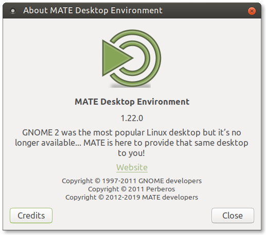

MATE 1.22 released
After about a year of development, the MATE Desktop team have finally released MATE 1.22. A big thank you to all contributors who helped to make this happen.

What’s new in MATE 1.22
This release contains plenty of critical bug fixes and under-the-hood improvements. Some of the big highlights include:
- The MATE panel has gotten a crazy amount of rework to make it work with Wayland display backend
- The display applet got a full revamp, allowing for better monitor control directly from the panel
- The timer applet now has much better mouse interaction
- Wanda the Fish now works properly on HiDPI displays (fish image is still pixelated, keeping to its original design)
- Support for metacity-themes has finally been upgraded to version 3 in the marco window manager
- We’ve also modernized the window and desktop switchers to make them more visually appealing
- The session manager now properly terminates all processes on systemd. Also, apps can be auto-started after a user-selected delay
- We’ve fully ported a number of programs to Python 3, including the eye of MATE and python-caja plugin libraries, as well as the mate-menus library
- The caja file manager can now optionally display desktop notifications for long-running file operations
- Eye of MATE has a reworked sidebar and better image metadata support
- Tabs in pluma now have the ability to be switched with keyboard shortcuts and mouse scrolling
- Calculator can now support up to 15 characters of accuracy. Copy/paste support was also improved a bit
- Engrampa has had support added for several new compression formats, as well as a new pause/restart functionality
- A few new key shortcuts have been added, including support for different types of media keys like Bluetooth, WiFi, touchpads, and global killswitches
- A bunch of internal housekeeping tasks have been taken care of:
- Most of our projects have now migrated from dbus-glib to GDBus
- We’ve improved stability across many of our projects by closing memory leaks and build warnings
- We’ve removed old deprecated code to keep up with the latest versions of GTK
- A lot of new and updated documentation was added/corrected
- All of our projects now use Travis CI to ensure clean builds on some of our major distros
The various components of MATE Desktop 1.22 are available for download here:
Changelog
Here are all the gory details.
atril
- 9031100 Add update-authors.pl script which helps to update atril.about
- a67e572 Read authors (updated) from atril.about gresource
- 9a4748b Enable Travis CI for all branches
- f68afd7 Initialize Travis CI support
- 96f9b79 Update Documenters
- d776f3f Remove generated files
- 4a7e48f Tx: sync with fixed translations from transifex
- 9b87168 [ephy-zoom-control] Avoid deprecated g_type_class_add_private
- d9c803e [ephy-zoom-action] Avoid deprecated g_type_class_add_private
- ca538e8 Add pixbuf, tiff and xps TypeDescription to POTFILES.in
- 869cb47 eggsmclient: avoid deprecated ‘g_type_class_add_private’
- 2a49c6c move appdata to metainfo directory
- fde24d0 message-area: set a11y object name from actual icon name
- d43c675 shell: remove duplicate condition check
- 19c3072 tiff: fix possible NULL pointer dereference
- 6457c82 pdf: add missing break statement
- 70ba1fb libdocument: drop useless freeing of NULL pointer
- 1b95162 comics: fix incorrect mimetype saying to open and thumbnail all RAR files
- 3c75360 disable deprecation warnings for distcheck
- eaae975 Use make functions for HELP_LINGUAS
- 7d9dab7 comics: support application/vnd.rar MIME type
- 699ce12 shell: Save document to the same path it was opened from
- a6fc396 Reduce the chattiness of atril daemon
- c9ea2a3 EvView: Fix cursor movement when logical and visual line order differs
- bb47386 Update atril_start_window.png
- c95b319 moveable (older spelling) -> movable
- 856bf94 Update Catalan screenshot
- 6e19591 presentation: avoid deprecated ‘gtk_style_context_set_background’
- 29fc232 fix Linguas
- 9a9999c sync with transifex
- 6a9d8eb update atril.pot
- 03a697c ev-sidebar-bookmarks: use NULL instead of uninitialized variable
- 05e6aa3 navigation-action-widget: replace deprecated gtk_menu_popup function
- 510ea85 shell: replace deprecated gtk_menu_popup function
- 0fd2124 ev-sidebar-links: replace deprecated gtk_menu_popup function
- be5fadc ev-sidebar-bookmarks: replace deprecated gtk_menu_popup function
- eac71e1 ev-sidebar: replace deprecated gtk_menu_popup function
- 95d6f03 editable-toolbar: replace deprecated gtk_menu_popup function
- 3168191 libview: replace deprecated gdk_flush
- 135e208 disable StartPresentation action in fullscreen if document has no pages
- de8c0ae disable ViewPresentation action if document has no pages
- 28243c0 libdocument: Use gdk_pixbuf_get_from_surface()
- c1a56c9 thumbnailer: Remove unused code
- e5c8ce7 view: Fix page background rendering while loading
- 3349fb9 libdocument: Deprecate misc_get_page_border_size()
- dc1432d view: Use a rendered frame instead of custom border
- bc7af60 a11y: Return correct start and end offsets
- 7c7c7ef a11y: Fix crash with Orca screen reader
- f3e061c libview: drop deprecated unneeded code
- d909dd4 ev-loading-message: Remove unused variables
- 6816696 libview: fix text selection with mouse in annotation window
- efe29e6 libview: fix build without epub
- d03d688 shell: Don’t dist generated files
- 9c08159 Disable view presentation if there is no document.
- dc77310 Allow changing the page of a presentation
- b0ea2c7 libview: Fix goto window in presentation mode
- 0c160a1 libview: avoid deprecated gdk_screen_get_monitor
- 557d371 EvPresentationView: Render correctly on HiDPI displays
- 5345f83 libview: Fix g_return condition in set_device_scale_on_surface()
- 2cae078 EvView: render correctly on HiDPI displays
- 1d90b70 libview: use css to draw the background of presentations
- 1b1f2c5 Move custom css to a file compiled as a gresource
- 11fc5dc shell: Use GResource for data files
- 5d51dc6 toolbar-editor: Add methods to load from GResource
- c3fe25e previewer: Use GResource for data files
- 9668d3f build: Add configure check for glib-compile-resources
- 3cb3227 update resource for translations
- 0f605a3 fix distcheck
- f671e62 libview: Check number of pages when processing button events
- 8597c1d libview: Add check for pageless documents to ev_view_accessible_focus_changed
- 9fc7889 libview: Check number of pages on ev_view_document_changed_cb Fix crash on corrupted PDF with no pages.
- a04ab7f Use GtkOverlay to show the loading message
- 9ac0d1a shell: Remove unused marshalers
- cfbab0a thumbnailer: Send error messages to stderr
- 2f89fcc shell: Use GtkApplication to inhibit the screensaver
- 15073fb shell: Port to GtkApplication
- 715e15b shell: Use g_printerr instead of g_warning
- da9c89f daemon: Port to GApplication
- 131b29e daemon: Use gdbus-codegen for the org.mate.atril.Daemon interface
- f44500b shell: Use gdbus-codegen for the org.mate.atril.Window interface
- 3f48838 shell: Use gdbus-codegen for the org.mate.atril.Application interface
- e51014b libview: save inverted colors in a document
- 4bb14f5 Save/restore context when getting colors for a different state
- 1f6278d epub: allow to save epub documents
- ea3dfb1 epub: fix loading epub thumbnails
- e79d266 Check legal boundaries of accessible pages
- 291facd shell: fix menu-accel for inverted colors
- 185e7b9 shell: add keypad accels for zoom_reset
- 580e4fa Add zoom reset
- 35e1622 add atril.pot for auto-update translations
- 615a1d0 transifex: set minimum_perc and type in config file
- 7a91219 avoid deprecated GtkStock
- bb0203b add travis-CI support
- f16828c Remove generated files
- 31b0fe8 Add pixbuf, tiff and xps TypeDescription to POTFILES.in
- 966e36f move appdata to metainfo directory
- a440818 disable deprecation warnings for distcheck
- 8bf0fa7 Use make functions for HELP_LINGUAS
- 413f6cc comics: support application/vnd.rar MIME type
- 91d5b0f shell: Save document to the same path it was opened from
- f4b9c80 Reduce the chattiness of atril daemon
- a7d0b8d EvView: Fix cursor movement when logical and visual line order differs
- 2f89c60 Update atril_start_window.png
- bf74341 moveable (older spelling) -> movable
- 81934df Update Catalan screenshot
- a6c6e13 sync with transifex
- d980c12 update atril.pot
- b365c22 disable StartPresentation action in fullscreen if document has no pages
- e710942 disable ViewPresentation action if document has no pages
- 73ca242 libdocument: Use gdk_pixbuf_get_from_surface()
- 62ca1c0 thumbnailer: Remove unused code
- 027a658 view: Fix page background rendering while loading
- df069ae libdocument: Deprecate misc_get_page_border_size()
- c09efef view: Use a rendered frame instead of custom border
- 0d84113 a11y: Return correct start and end offsets
- e3ce0a4 a11y: Fix crash with Orca screen reader
- 4065873 libview: drop deprecated unneeded code
- bb4e4b7 ev-loading-message: Remove unused variables
- 05b1f12 libview: fix text selection with mouse in annotation window
- 4ecb058 libview: fix build without epub
- 6fe6574 shell: Don’t dist generated files
- c238f51 Disable view presentation if there is no document.
- 50bdf3f Allow changing the page of a presentation
- 454ca8b libview: Fix goto window in presentation mode
- b9dcc2a libview: avoid deprecated gdk_screen_get_monitor
- c0cf2c6 EvPresentationView: Render correctly on HiDPI displays
- 14c88f2 libview: Fix g_return condition in set_device_scale_on_surface()
- 58486bb EvView: render correctly on HiDPI displays
- 02970c6 libview: use css to draw the background of presentations
- 1e531cb Move custom css to a file compiled as a gresource
- c7fcfa1 shell: Use GResource for data files
- e0f26b9 toolbar-editor: Add methods to load from GResource
- 6b84d6f previewer: Use GResource for data files
- 95437d1 build: Add configure check for glib-compile-resources
- eaee969 update resource for translations
- c417e7c fix distcheck
- 3fddbe7 libview: Check number of pages when processing button events
- 10d764d libview: Add check for pageless documents to ev_view_accessible_focus_changed
- aa3bcfa libview: Check number of pages on ev_view_document_changed_cb Fix crash on corrupted PDF with no pages.
- 6346384 Use GtkOverlay to show the loading message
- 7d0ac84 shell: Remove unused marshalers
- c99d768 thumbnailer: Send error messages to stderr
- 21073d4 shell: Use GtkApplication to inhibit the screensaver
- 674a6b3 shell: Port to GtkApplication
- b0f83ee shell: Use g_printerr instead of g_warning
- 0884be6 daemon: Port to GApplication
- 3728fb7 daemon: Use gdbus-codegen for the org.mate.atril.Daemon interface
- e2420ea shell: Use gdbus-codegen for the org.mate.atril.Window interface
- 18a20e8 shell: Use gdbus-codegen for the org.mate.atril.Application interface
- e4f8fce libview: save inverted colors in a document
- 6217a89 Save/restore context when getting colors for a different state
- 56e08ae update pot file for translations
- 27f459a epub: allow to save epub documents
- bd799f4 epub: fix loading epub thumbnails
- 8770730 shell: fix menu-accel for inverted colors
- 1c2e9ea shell: add keypad accels for zoom_reset
- 7619dc6 Add zoom reset
- 58e7446 avoid deprecated GtkStock
- 005d885 Check legal boundaries of accessible pages
- 4f0467b add atril.pot for auto-update translations
- 42e6a5f transifex: set minimum_perc and type in config file
caja
- 601c853 eel-gdk-pixbuf-extensions: Fix division by zero
- 6e6c9c6 caja-file: Fix use of memory after it is freed
- 0bd2d81 caja-icon-container: Fix use of memory after it is freed
- 1848d37 fm-tree-model: Fix use of memory after it is freed
- 7c9ae01 caja-information-panel: Fix use of memory after it is freed
- 7b605dd fm-directory-view: Fix use of memory after it is freed
- 58312fd caja-tree-view-drag-dest: Fix memory leak
- 7a26045 [Security] eel-string: Use ‘g_strlcat’ instead of ‘strcat’
- fede367 [Security] Use ‘g_strlcpy’ instead of ‘strcpy’
- da3b634 Add update-authors.pl script which helps to update caja.about
- 5379181 Read authors and documenters from caja.about file
- f5e08dd Ensure proper translation of the about dialog title
- 65aaac0 Prepare for docker-build 0.1.1 merge into master
- 222fcc0 Update authors
- ba01c8c Update Documenters
- 852f992 use archlinux/base images
- 42082f6 Remove the distcheck return value override
- 86b93da update caja.pot for transifex
- 9bec3b7 fixed distcheck fail on debian
- 2d59514 fixed the help string of —disable-self-check
- 5e5c47f Always return 0 for distcheck
- 78b7682 update travis to support archlinux and enable distcheck
- 91f1dc6 Add —disable-self-check for configure
- 3daa55c Avoid deprecated g_type_class_add_private under src
- 4e42def Fix incompatible pointer types
- e99050a Avoid deprecated g_type_class_add_private under src
- 7920f97 Avoid deprecated g_type_class_add_private under libcaja-private
- 0b07371 Avoid deprecated g_type_class_add_private under libcaja-private
- e5129f9 Avoid deprecated g_type_class_add_private under libcaja-private
- e226dda Enable Travis CI
- 9cd63d4 Avoid deprecated g_type_class_add_private under libcaja-private
- 4196136 Avoid deprecated g_type_class_add_private under src
- 328d820 Fix compile warning
- dbfd51e Let file size units follow the users preference
- 0a37810 Fixed the value of 6 month and 1 year.
- 3a22d4c Support querying files by modification time and size
- e8f124d Avoid deprecated g_type_class_add_private
- 331a0e1 Update copyright to 2019
- d373d6c CajaApplication: avoid deprecated ‘g_type_class_add_private’
- a9211bd caja-menu: avoid deprecated ‘g_type_class_add_private’
- 10efec8 [eel][libegg] Use G_DEFINE_TYPE_WITH_PRIVATE macro
- f0775c8 configure.ac: Add check for PKG_CONFIG being set.
- 7408146 fix distcheck
- a35b46f caja-application: Check for smclient before trying to load session
- 3eb0ff8 [eel] Avoid deprecated g_type_class_add_private
- 9fc6f1f [libegg] Avoid deprecated g_type_class_add_private
- 9991fb1 [libcaja-private] Re-check file MIME type before picking an application.
- e51b16d [file-manager] Fix apparent bug in context menu updating code.
- cf23b9a Revert “fm-directory-view.c: Decrease minimum update interval.”
- e7b68e0 Fix: weird item in bookmarks if the folder was removed
- 1846d75 Minor code-quality enhancements
- 89db50e Forgot to initialize is_backup field
- 34d0676 Change show/hide backup files shortcut
- 2d66485 Remove useless comments, correct description string
- 06b4f4c Skip hidden files only, not backups
- 58e9876 Add independent show/hide backup files
- 040a897 deleting unused nautilus icon
- 75e89ca caja-progress-info: new behavior with notifications:
- 08f479a caja-progress-info: show notifications with the gsettings key:
- d054f14 move appdata to metainfo directory
- 750c034 disable deprecation warnings for distcheck
- 116ba41 caja-places-sidebar: replace two other uses of g_drive_poll_for_media_finish
- 884870c Fix segfault on stopping USB hard drives
- c12b61b caja-bookmark: Fix memory leak
- a8de3bb fm-properties-window: Fix memory leaks
- 09eda67 caja-desktop-link-monitor: Fix memory leak
- 056832f eel-gtk-extensions: Fix memory leaks
- 6dbdc90 GSettings should init before use it.
- 74d2b19 sync with transifex
- 2676eaf Fix case-insensitive comparison in running_in_mate
- 0bffad7 monitor: fix crash on unmounting remote filesystems
- d8d375b CajaFile: fix crash in modify_link_hash_table
- ae033ba connect-server-dialog: Respect password save setting
- bc0b2cb properties-window: fix checking inconsistent state
- 8fff655 monitor: watch for removal of non-native mounts on GVolumeMonitor
- 09146ca Add ‘Configurable’ interface and add support to caja-file-management-properties
- adeaed2 caja-application.c: Remove redundant empty lines
- dba8610 Update caja manpage with info about “—force-desktop” option
- 6c423bc Caja-icon-info: Optimize icon lookups by GIcon.
- 021ff2a fm-directory-view.c: Decrease minimum update interval.
- 336f351 Remove dead code, fix a memory leak
- 6a31ce6 add option to open multiple URIs in tabs at startup
- fb9a3cf Revert “add option to open multiple URIs in tabs at startup”
- 0d7a79d Revert “Memory leak fix”
- e362fef Revert “Fix indents, update docs to reflect ability to open URIs in tabs”
- 424cf44 Fix indents, update docs to reflect ability to open URIs in tabs
- 04f7e80 Memory leak fix
- fd1f45f add option to open multiple URIs in tabs at startup
- 3619f72 pathbar: Activate pane when changing location
- c455418 add the ability to switch tabs using [ctrl+tab] and [ctrl+shift+tab]
- e740a98 caja-window: Fix: mouse doesn’t work with [ctrl] + [.] or [ctrl] + [;]
- 5b20286 caja-desktop-directory: stop segfaults in directory_ready_callback
- a2fa06f caja-directory.c: fix build warning
- f9bae2f pathbar: increase reference count of path in update_button_types
- acdb7e2 Fix some issues found by static analysis
- 191aa39 libcaja-private: remove redundant prefs application to hash table
- 78d9182 [desktop-bg] Fix memory leak during background change events
- 2d179e4 caja-location-bar: Fix: change background color based on activity state
- 970cda6 sync with transifex
- 76c2a2a eel-gtk-extensions: show icons in right-click menus only if “menus-have-icons” set
- eafef85 caja-sidebar-title: Fix: images broken in sidebar
- a797afc caja-progress-info.c: show notifications in begin/end of progress
- 639c902 caja-progress-info.c: avoid deprecated ‘gtk_status_icon_get_visible’
- e7942e9 caja-sidebar-title: fix [-Wmaybe-uninitialized] warning
- df6643a desktop window: Add is-desktop AtkObject attribute
- 3720401 caja-desktop-window.c: Fix: caja crashes unexpectedly
- b0899ef avoid deprecated ‘gtk_widget_override_font’
- 347e1f1 avoid deprecated ‘gtk_window_set_wmclass’
- cfc9b47 caja-bookmark.c: drop unused variable
- a3195d0 caja-bookmark.c: Fix icons in bookmarks
- eb65d22 icon-container: avoid deprecated ‘gtk_style_context_get_border_color’
- 6841bd7 avoid deprecated ‘gtk_dialog_get_action_area’
- c31de77 update potfile
- c0f159d Pathbar button: fix poor response to right-click
- 9f08546 editable-label: avoid deprecated ‘gtk_im_multicontext_append_menuitems’
- 9bf65ee zoom-control: use NULL instead of uninitialized variable
- 13fe58e remove unused function
- 7cae49a use NULL instead of uninitialized variable
- 8a31b06 eel-editable-label.c: avoid deprecated ‘gdk_keymap_get_default’
- 1aff6ea eel-editable-label: avoid deprecated gtk_style_context_set_background
- c4777b0 eel-gtk-extensions: replace deprecated gtk_menu_popup function
- 42e5c91 zoom-control: don’t use eel_pop_up_context_menu function
- ddf6f38 Replace deprecated gtk_menu_popup
- ded490e libcaja-private: replace deprecated gdk_error_trap functions
- fc70465 fm-desktop-icon-view: replace deprecated gdk_error_trap_push/pop functions
- 2392093 replace deprecated gdk_flush
- 5ed053f libcaja-private: fix -Wlogical-not-parentheses build warning
- e88c26a avoid deprecated ‘gtk_style_context_get_background_color’
- f250053 sync with transifex
- c490029 caja-spatial-window.c: avoid deprecated ‘gtk_vbox_new’
- 99cf0ca Eliminate accessible children-changed event flood on container repopulation
- 5e236e9 Eliminate accessible children-changed event flood during update all
- 3c3f62d Emit accessible-name-change signal for icons only when icons are renamed
- 9f8d950 libcaja-private/caja-recent.c: gvfs-open is a deprecated tool, switch to “gio open” from libglib2.0-bin.
- 4d4f750 sidebar popup menu: show “media-eject” icon in the “unmount” items
- f8e6051 update potfile
- 01a8519 pathbar: fix random segfaults on opening mounts from Desktop
- f6a4e9c fm-icon-view: Show size on disk as sort criterion
- 7a76ce4 sidebar popup menu: show “media-eject” icon
- 2786f3c update potfile
- 0585258 Add sort criterion by reversed extension segments
- 68ace00 set icon names instead stock ids in some places
- b70d394 caja-spatial-window.c: avoid deprecated GtkImageMenuItem
- a00bad2 Fix warnings from HiDPI commits
- 9ea3b71 sidebar: Respect sidebar dimensions on HiDPI
- 554a036 HiDPI: Convert Pixbufs to Cairo Surfaces
- 280ef82 general: use gdk_monitor_get_scale_factor
- e28ff9c list-view: use the cairo surface as a drag icon
- ef78aa3 Scale screen dimensions
- cfd5021 icon-info: hash/store icons using scale factor as well as size
- 47246e2 file: support HiDpi for thumbnails images
- c0d60fc properties-window: support HiDpi for the properties window icon
- bc1405c Support HiDpi icons
- 779e0af canvas-container: listen to scale factor to invalidate icons
- a864855 canvas-item: use gtk_render_icon_surface for the DnD surface
- 35eb416 desktop-canvas-view: scale desktop work area
- 37ebfa8 pre-bump version
- d20ceac caja-side-pane.c: avoid deprecated GtkImageMenuItem
- ffb953f caja-navigation-window-pane.c: avoid deprecated GtkImageMenuItem
- 9b6b0dc caja-navigation-window-menus.c: drop unused variable
- 72968ab caja-navigation-window-menus.c: avoid deprecated GtkImageMenuItem
- e9bd5cb caja-bookmark: avoid deprecated GtkImageMenuItem
- 3403ff7 caja-places-sidebar.c: avoid deprecated GtkImageMenuItem
- 70ebaf4 caja-emblem-sidebar.c: avoid deprecated GtkImageMenuItem
- 414fdf7 fm-tree-view.c: drop unused variable
- 844df9d modify code error: end the statement with a semicolon
- e031d4f fm-tree-view.c: avoid deprecated GtkImageMenuItem
- 8bebf06 rename ‘mate_image_menu_item…’ to ‘eel_image_menu_item_new_from_icon’
- ffc9106 eel-editable-label.c: avoid ‘append_action_signal’ with stock ids
- 7991810 caja-query-editor.c: add #include <eel/eel-stock-dialogs.h>
- 7c9b80c avoid ‘gtk_file_chooser_dialog_new’ with stock ids
- 4fb3590 avoid gtk_dialog_new_with_buttons with stock ids
- d4711ef add caja.pot for auto-update translations
- 68fb5e4 avoid gtk_dialog_add_buttons with stock ids
- dfb6585 transifex: set minimum_perc and type in config file
- 683e944 caja-file-management-properties.ui: avoid deprecated GtkVBox and GtkHBox
- d66b717 caja-bookmarks-window.ui: avoid deprecated:
- ed46e15 rename mate_dialog_add_button to eel_dialog_add_button
- 4901253 use development version
- 20fe122 pre-bump version
- 7763ec9 avoid eel_create_question_dialog with stock ids
- f0ab0d4 avoid eel_run_simple_dialog with stock ids
- 9778a3a eel-stock-dialogs: avoid gtk_dialog_add_button with stock ids
- 5f0ad00 caja-file-operations: avoid gtk_dialog_add_buttons with stock ids
- 01cec7e remove runtime warning in usage of caja_clipboard_set_up_editable
- ab30e57 caja-file-conflict-dialog: avoid gtk_dialog_add_buttons with stock id
- e313685 avoid deprecated GtkButton:use-stock
- 012d9f8 can selected all the search keywords with Ctrl+a. #918
- 54a9de1 caja-autorun: avoid gtk_dialog_add_buttons with stock ids
- ff1b432 eel-editable-label.c: avoid gtk_image_menu_item_new_from_stock
- cff14d0 caja-file-management-properties.ui: avoid stock properties:
- f8a7e7a Toolbar: find icon: use icon name instead the stock id
- 7e8bb46 caja-bookmarks-window.ui: avoid deprecated GtkButton:use-stock
- dd4c0f7 CAJA_TYPE_NAVIGATION_ACTION: avoid deprecated property “stock_id”
- bbc0211 fix backgrounds and emblems dialog content rendering
- bf3da8e avoid deprecated GtkStock
- 22aad8d use archlinux/base images
- f2a22d2 Remove the distcheck return value override
- 7ae4cd8 fixed the help string of —disable-self-check
- 89a3be2 Add —disable-self-check for configure
- e6bfa07 add travis-ci config
- 22d0e28 fixed distcheck fail on debian
- 017b058 pathbar: fix random segfaults on opening mounts from Desktop
- 94c2f1c move appdata to metainfo directory
- ed4730c disable deprecation warnings for distcheck
- 311ab2b caja-places-sidebar: replace two other uses of g_drive_poll_for_media_finish
- df49a00 Fix segfault on stopping USB hard drives
- 157d047 fm-properties-window: Fix memory leaks
- bd0d998 caja-desktop-link-monitor: Fix memory leak
- 78607a5 Fix case-insensitive comparison in running_in_mate
- 5200838 pathbar: Activate pane when changing location
- f19255f caja-window: Fix: mouse doesn’t work with [ctrl] + [.] or [ctrl] + [;]
- ba087de desktop window: Add is-desktop AtkObject attribute
- a58d52a Fix warnings from HiDPI commits
- ce14bef sidebar: Respect sidebar dimensions on HiDPI
- dade92d HiDPI: Convert Pixbufs to Cairo Surfaces
- 556663a general: use gdk_monitor_get_scale_factor
- 0630180 list-view: use the cairo surface as a drag icon
- 1a14801 Scale screen dimensions
- 4c377ba icon-info: hash/store icons using scale factor as well as size
- 70534c0 file: support HiDpi for thumbnails images
- 2e0c51f properties-window: support HiDpi for the properties window icon
- 4bf67ac Support HiDpi icons
- 35c4dc6 canvas-container: listen to scale factor to invalidate icons
- 52d44de canvas-item: use gtk_render_icon_surface for the DnD surface
- 7f22b30 modify code error: end the statement with a semicolon
- 6082649 remove runtime warning in usage of caja_clipboard_set_up_editable
- d885694 can selected all the search keywords with Ctrl+a.
- fcbee7f add caja.pot for auto-update translations
- 33dc065 transifex: set minimum_perc and type in config file
- dabd62d fix backgrounds and emblems dialog content rendering
caja-dropbox
- 5fdcb17 Use CAJA_EXTENSION_DIR_SYS to save and show system caja extension dir
- fdc25dc show full path of caja-extension-dir
- 6d281bc fix distcheck about caja_extension_dir
- dd70319 Enable Travis CI for all branches
- 60bbb51 Initialize Travis CI support
- 05e1e93 Fix distcheck fail
- 285937d use only Python 3 during the build to complete the migration
- 3d48c5e migrate from python2 to python3 of rst2man.py
- 4eab52b remove more -u modifier for dropbox-cli
- cd91ced Python 3 update for dropbox-cli
- f3fe4a4 Add Keywords entry to desktop file
- 7ab9374 Use cross-compilation-safe pkg-config macro.
- c85aaec Remove deprecated glib2.0 API calls
- 167bfab Use GIR bindings instead of pygtk
- 55e4f9b fix UnicodeWarning when exclude command is used with non-latin args
- 343a3fb Update to redesigned icons
- 1eb18c6 small caja-dropbox.in fixes
- 527b9cc Add a new “dropbox update” command
- 4cb4209 Unlink files that are going to be replaced by the unpack
- 192451f Validate that Dropbox runs after downloading it
- 3d511a6 Use python-gpg instead of python-gpgme
- 68dd75a Explicitly load using python2 interpreter
- a7da6a7 Refer to .dropbox-dist in only one place
- a939670 fixed ‘exclude command raise UnicodeDecodeError’
- 5543711 Avoid reading or writing invalid memory addresses
- 991a851 Display link url on status
- d3261c1 Update dropbox.py with shmodel, proxy, and throttle features.
- a2ccaaf update Copyright year
- 394578f pre-bump version
caja-extensions
- 2e1a77b Enable Travis CI for all branches
- dde037d Initialize Travis CI support
- 512e1c8 require caja >= 1.21.3
- 22cb044 configure: fix some typos
- e04adb3 disable deprecation warnings for distcheck
- dd67d69 Make caja-open-terminal configurable (Depends on caja GitHub PR caja#1050)
- 3fecb36 NEWS: use development version
- 4b1141f pre-bump version
- 27d49a6 transifex: set minimum_perc and type in config file
- 84e7fac add Travis-CI support
- 4f06445 disable deprecation warnings for distcheck
- d3b8be7 sync with transifex
- 7db6ed1 transifex: set minimum_perc and type in config file
engrampa
- 8e1c290 fr-process: Fix memory leak
- 84db3ea add Travis-CI support
- 29b4e67 Tx: syn with fixed translations from transifex
- e61212f rar/unrar: Fix: “overwrite existing files” disabled must work
- b683362 move appdata to metainfo directory
- dc0f490 disable deprecation warnings for distcheck
- 95541ae Use make functions for HELP_LINGUAS
- cd7f17a Replace -Dokumentationteam
- dd11160 Replace -Dokumentationsprojekt with Documentation Project
- 9b4ba7a Manual: Update file format descriptions using shared-mime-info
- 2c9e615 Fix URL of ulinks to point to mate-user-guide
- 2c60ca9 UNIX and Linux systems -> Linux and UNIX-like systems
- 2804b35 update engrampa.pot
- fa7097c fr-window: fix typo
- 247093f sync with transifex
- 1e1a94a update engrampa.pot
- 6f824fe Add .a (Ar) support
- 3ee4f6c fix crash on exit after using Open With dialog
- 08a8eac transifex: set minimum_perc and type in config file
- c55754a fr-process: Fix memory leak
- bbca40d Help: Fix version to 1.22 and update pot file
- d62cff0 help: update copyright
- 4e0a8da Upgrade the manual to docbook 5.0
- db21779 Avoid array index out of bounds parsing dpkg-deb —info
- 333a9e9 warning: Use of memory after it is freed
- c9eb7cb Read authors (updated) from engrampa.about gresource
- 5ceee4c Enable Travis CI
- b0a7135 eggsmclient: avoid deprecated ‘g_type_class_add_private’
- e929b84 update copyright year to 2019
- 647645d rar/unrar: Fix: “overwrite existing files” disabled must work
- 9771782 #225 fix a typo
- d5ef415 fix fr-command-cfile.c: fr_process_set_working_dir
- 0577456 fr-command-cfile.c: fix indentation
- afb8ebd Added test integrity for brotli
- ab9e18f Added test integrity for the cfile compressors: gzip, bzip2, etc. But since most of them shows the message with file status to STDERR instead of STDOUT whe should show both in Test result window.
- a699fa2 move appdata to metainfo directory
- 3b4ae2f fr-window: show the pause button only if the dialog is working
- 11bbca8 disable deprecation warnings for distcheck
- 3037620 fr-window: avoid ‘gtk_dialog_add_button’ with stock ids
- 57b6906 fr-window: hide the progress bar if the process is paused
- 10fd1e2 fr-window: change the info label if process is paused/resumed
- d5560ec fr-window: little improvements in the look of pause/resume button
- 5eea3e1 Adding pause and start functions
- b1d6ced Fix implementation and use of the alternative package name lookup
- fa96f93 Added support for brotli (*.tar.br) compressed tar archives
- f06c216 Add brotli support
- 8ef808e Use make functions for HELP_LINGUAS
- ad74b5d Replace -Dokumentationteam
- d7d22b4 Replace -Dokumentationsprojekt with Documentation Project
- 6c451b3 Manual: Update file format descriptions using shared-mime-info
- 3b890f9 UNIX and Linux systems -> Linux and UNIX-like systems
- 0c6a7a0 update engrampa.pot
- fc73b13 fr-window: fix typo
- c587ae1 Add the ability to support ‘unar’ over .zip archives
- 10e665f Add support for OpenDocument formats
- 7c0038a UI: on the properties dialog, focus the Close button instead of the Help button by default
- 7b1a66c sync with transifex
- c96c85f pre-bump version
- 499e600 Add .a (Ar) support
- ef714ac fr-window: Replace deprecated gtk_menu_popup functions
- a03aa8c fix crash on exit after using Open With dialog
- 6d56e36 transifex: set minimum_perc and type in config file
- 2e9c1a1 avoid deprecated GtkStock
eom
- 905f8b7 Help: Fix version to 1.22 and update pot file
- bc141be help: update copyright
- bbcca8d Upgrade the manual to docbook 5.0
- 9f631a7 Use persistent page setup
- 68ac123 Add update-authors.pl script which helps to update eom.about
- eed5511 Read authors (updated) and documenters (updated) from eom.about gresource
- 17ca341 Enable Travis CI for all branches
- 2c34542 Initialize Travis CI support
- 119fd7e Ensure proper translation of the about dialog title
- 941b0ec Make translatable the copyright in about dialog
- 9cf9e2e Help - fix gui labels
- bd1f72d disable deprecation warnings for distcheck
- e3a9345 Update the appdata XML file
- 5e245f8 Use make functions for HELP_LINGUAS
- 0b573f4 Fix url of ulink to point to mate-user-guide
- 8eca711 Update Catalan screenshots
- 7af7c3b Fix spelling and grammar mistakes
- 1e17920 Update eom_start_window.png
- e148897 Reduce the number of g_file_query_info calls at start-up
- e3cb374 EomImage: Remove unused constructor
- f4d798a fix a memory leak
- c98f5cc docs: remove eom-dialog.xml reference to fix distcheck
- f4818d9 sync with transifex
- 18a612e EomMetadataSidebar: Make header include guard actually work
- b21b983 EomWindow: Switch keyboard shortcuts for sidebar and gallery
- d066bae Tweak sidebar ui
- 4185e8c EomPropertiesDialog: Use standard::display-name when showing the parent
- 0e708c5 EomMetadataSidebar: Use standard::display-name when showing the parent
- ab96aad Fix GResource dependency calculation for out-of-tree builds
- adfe0c7 Make sure the libpeas-gtk dependency isn’t optimized away
- c2fc002 Remove EomDialog helper class
- 4b4a611 EomPreferencesDialog: Convert to GtkBuilder template
- b18e263 EomThumbnail: Load thumbnail frame from a GResource
- b1fb22d Load EomMultipleSaveAsDialog from GResource
- b5172a3 eom-window: fix deprecated GtkStock usage
- 22f5b20 Fix build without XMP support
- 70fd470 Load eom-image-properties-dialog.ui with a gresource
- 8734d0e properties-dialog: Port to gtk_show_uri_on_window
- 068315f EomPropertiesDialog: Convert to GtkBuilder template
- 734ad19 EomPropertiesDialog: Remove unused private members
- e306d7a Fix metadata sidebar with libexif disabled
- fd322e8 Fix API docs build without libexif
- c828347 EomMetadataSidebar: fix —without-libexif build
- f517d6d EomMetadataSidebar: Clear folder label if no image is set
- 6aac9e3 EomSidebar: Increase margin at the sides of the sidebar
- 6319bb3 EomSidebar: Center and reformat page selector
- ece3c97 EomMetadataSidebar: Fix leaked strings
- a29a5d1 metadata-sidebar: add the details button again
- 6b0c2ae EomMetadataSidebar: Try to unclutter and improve the sidebar’s look
- 3d80a86 GResource: free css_file
- 6d164b4 Initial GResource migration
- e12f285 EomExifUtil: Fix build with newer GCC
- 1e96c9d EomExifUtil: Allow freeform formatting of date strings
- 9b4890e EomMetadataDetails: Improve fractional GPS coordinates support
- f965eb2 EomPropertiesDialog: Separate Exif/XMP-specific widgets from generic ones
- 4e20a6d EomMetadataDetails: Don’t install header file
- 49c5c97 EomExifDetails: Rename to EomMetadataDetails
- 9593351 Drop eom_close_confirmation_dialog_set_sensitive
- 704107b scroll-view: Remove a gdk_window_process_updates call
- 416dc9b util: Port to gtk_show_uri_on_window
- 4115f76 EomImage: Make sure to emit size-prepared after applying orientation
- c3d8c61 EomImage: Fix too early size-prepared emission
- 5f6f184 EomImage: Slight optimization of private data structure
- a95925a drop forgotten gtkrc file
- 1f2aba7 css: drop obsolete old css language
- 447f5fe EomWindow: silence a introspection warning
- 94f7f44 Convert to G_DEFINE_TYPE_WITH_PRIVATE part 3
- fb7c539 Convert to G_DEFINE_TYPE_WITH_PRIVATE part 2
- 5a5612a Convert to G_DEFINE_TYPE_WITH_PRIVATE part 1
- a3c97eb EomApplication: Make most members private
- bb3b0c0 Add new plugin hook for per-application plugins
- 57506ff Make EomWindow a GtkApplicationWindow
- 5c58837 sidebar: show complete directory in button tooltip
- b504d5a properties-dialog: show complete directory in button tooltip
- a5ba9a2 Make the URI-label in the properties dialog a button showing the folder
- 14a755c exif-details: make value column selectable
- b3f9b82 EomExifDetails: Take Exif IFD into account when creating hash keys
- a3a89e0 Place GPS Exif tags into their own subcategory
- fe21ccd Reformat Exif tags for GPS position to be better understandable
- 32f2e6f Make sure GPS Exif tags are named and ordered correctly
- 017f7e5 Use GdkPixbuf’s “orientation” feature as fallback for autorotation
- 7eec54c EomScrollView: Implement simple two-pass filtering
- 7f38bf6 EomScrollView: Use better downscaling filter
- f607cda Remove unneeded finalize() from EomListStore
- 9b79e09 Update plugins to use EomWindowActivatable interface
- 026b114 Add our own activatable interface to EomWindow
- 17e6cdb Replace gdk_spawn_command_line_on_screen()
- 7dbd1b8 sidebar: replace deprecated gtk_misc_set_alignment
- 15a0431 POTFILES.in: add ‘src/eom-metadata-sidebar.c’
- 78f41c1 EomWindow: Simplify metadata sidebar title
- 362b507 EomSidebar: Set orientation property via g_object_new
- 32675ab Replace remaining uses of margin-left and margin-right properties
- e6cda96 EomMetadataSidebar: Allow filename to be wrapped at char boundaries
- bcc8082 sidebar: fix a deprecation
- a46238b EomMetadataSidebar: Fix deprecation warning with newer GTK+
- d7910a6 MetadataSidebar: Add a tooltip to the folder button
- de32a70 MetadataSidebar: Change layout of the data values
- ad13501 Make metadata values in MetadataSidebar selectable
- d328203 Fix build when not building with libexif and/or exempi
- 09fea91 Don’t force-enable the sidebar on startup once a page is added
- b1c0911 Make Exif/XMP summaries available as sidebar
- 28fbd14 Drop now unneeded TotemScreenSaver
- 4817ee9 Use GtkApplication to inhibit the screensaver during slideshows
- 9e687fa Ensure UI action sensitivity is set at least once
- bc859fd Remove leftover DBus service description file
- 59ea038 Remove spurious g_object_unref
- 0c78063 reload: ensure that pending updates to UI are complete
- 20d704b Port EomApplication to GtkApplication
- 63a6313 Make the displayed EomImage a property of EomScrollView
- cfc83b4 EomPropertiesDialog: Make details view expand vertically
- ed3ef44 Enable more Drag&Drop actions when eom is drag source
- fb4446d Use new DBus API to show the current image in the file browser
- 07de875 Add an “Open containing folder” command
- 9815134 sync with transifex
- e7df737 pre-bump version
- 0e624a5 toolbar: add missing popup menu for launching toolbar editor
- f3bc78d sidebar: replace deprecated gtk_menu_popup
- 620071b editable-toolbar: replace deprecated gtk_menu_popup
- 50d0a50 editable-toolbar: replace deprecated gtk_drag_begin
- 530d7cb svg: Fix offset coordinates when transforming SVG images on HiDPI displays
- 5da033e require libpeas 1.8.0
- c94e091 plugins: Use Python 3.x for Python plugins
- a206e04 replace deprecated gdk_flush
- 03783b9 fix some -Wincompatible-pointer-types warnings
- 51fc70f Scale HiDPI images correctly
- 30940c7 transifex: set minimum_perc and type in config file
- 29a62cd eom-window.c: avoid deprecated GtkButton:use-stock
- 98d6a43 avoid deprecated GtkStock
- 96b1b4d Use persistent page setup
- db25ddd add Travis-CI support
- eba5461 Help - fix gui labels
- 540e33f Update the appdata XML file
- cfdbd1f disable deprecation warnings for distcheck
- 98a063e Reduce the number of g_file_query_info calls at start-up
- 0d1a90a EomImage: Remove unused constructor
- 49a85ee Use make functions for HELP_LINGUAS
- d434d35 Fix url of ulink to point to mate-user-guide
- 9b628a8 Fix spelling and grammar mistakes
- 9b033ce Update eom_start_window.png
- 5376650 fix a memory leak
- dba717d exif-details: make value column selectable
- 667f5b2 EomExifDetails: Take Exif IFD into account when creating hash keys
- 0c6a01d Place GPS Exif tags into their own subcategory
- 87d59bd Reformat Exif tags for GPS position to be better understandable
- af9cd83 Make sure GPS Exif tags are named and ordered correctly
- 7e9dc52 EomPropertiesDialog: Make details view expand vertically
- bbf490b EomScrollView: Use better downscaling filter
- 433c776 reload: ensure that pending updates to UI are complete
- 16f5b2c fix some -Wincompatible-pointer-types warnings
- 1523539 sync with transifex
- 2f04a37 svg: Fix offset coordinates when transforming SVG images on HiDPI displays
- bca6a64 Scale HiDPI images correctly
- ae3e2a4 transifex: set minimum_perc and type in config file
libmatekbd
- 7e730f0 Enable Travis CI for all branches
- e6e0234 Initialize Travis CI support
- dc04e96 rename g_strv_equal to matekbd_strv_equal
- c3a62d4 sync with transifex
- b11e6ca pre-bump version
- a95a4f4 correct scaling on HiDPI displays
- 81034cf transifex: set minimum_perc and type in config file
- 05c064e Use gdk screen resolution for font in keyboard status notification icon, to get correct scaling on HiPDI displays.
- 3fa26b6 add Travis-CI support
- c36d3ec sync with transifex
- 8740018 fix po files
- e6cd5be transifex: set minimum_perc and type in config file
- 90dba6e Use gdk screen resolution for font in keyboard status notification icon, to get correct scaling on HiPDI displays.
libmatemixer
- 4d4520c Enable Travis CI for all branches
- 8653076 Initialize Travis CI support
- ae50369 add missing po file
- af5d296 sync with transifex
- 3c87f89 pre-bump version
- d6a79fd require PulseAudio 5.0 and drop some old code
- e6a5518 transifex: set minimum_perc and type in config file
- 2fb29e6 add Travis-CI support
- f60062b sync with transifex
- 8afb1b3 transifex: set minimum_perc and type in config file
libmateweather
- 33a4dd5 Enable Travis CI for all branches
- 78e3339 Initialize Travis CI support
- c0e6a9b disable deprecation warnings for distcheck
- ada5129 locations: Clean up municipalities of Puerto Rico
- 6a444b4 sync with transifex
- 503f0b5 pre-bump version
- 8d8508b locations: Add Feira de Santana, Brazil
- 9c3dc44 test_sun_moon.c: remove unused variable
- 113668f weather-moon: fix weird thing in comments
- 6197477 metar: fix searching for string to parse
- 2cb7572 metar: fix indent somewhat
- 92346b7 transifex: set minimum_perc and type in config file
- 2054a03 add Travis-CI support
- 74edb1c disable deprecation warnings for distcheck
- cecbcbb locations: Clean up municipalities of Puerto Rico
- af00b18 sync with transifex
- 6ea8e08 locations: Add Feira de Santana, Brazil
- 70e80da weather-moon: fix weird thing in comments
- 4f556e0 metar: fix searching for string to parse
- e059ca3 metar: fix indent somewhat
- 11cd30b transifex: set minimum_perc and type in config file
marco
- 369338f Do not judge whether the window is decorated or not
- 230f96c screen: Fix use of memory after it is freed
- 76a5cff [Security] Use ‘g_strlcpy’ instead of ‘strcpy’
- fc162df compositor-xrender: Fix memory leak
- 7dd304a Prepare for docker-build 0.1.1 merge into master
- 9523142 Show build status icon
- 7f48454 Now to use docker-build on the master branch
- faed5d8 change to use archlinux/base image
- becec7e Initialize travis support
- fad23c9 screen: Remove get_current_monitor in favor of get_current_xinerama
- 8abba9a Increase icon size on tab and workspace popups
- a931b08 screen: avoid ‘NULL’ in ‘meta_error_trap…’ functions
- c0be5a7 prefs: avoid deprecated ‘g_settings_list_keys’
- 683d5cf add git.mk to autogenerate .gitignore files
- c3cad38 enable silent output when building
- 4940310 ‘meta_error_trap_push’ instead ‘meta_error_trap_push_with_return’
- b4dcd38 errors.c: avoid deprecated ‘gdk_error_trap…’ functions:
- 898e941 frames.c: drop unused variables
- 7a18fdd compositor-xrender: avoid deprecated ‘gdk_error_trap_push/pop’
- c5b4162 fix build with ‘as’ language translation
- fff65b4 sync with transifex
- a6f9462 theme: revert theme format version 3.6
- fbae49d doc: add info for 3.5 and 3.6 theme format versions
- 0b1c160 Revert “libmarco-private: remove ‘-1’ part from include dir name”
- 522ad73 Convert frame region handling to cairo regions
- 93b5dd1 theme: add invisible_border to metacity theme
- c49f361 add support for app-menu button in theme
- cb9a1be remove option to attach modal dialogs
- 5418b40 theme: replace mutter/metacity with marco
- 9b6f737 theme: Replace char array element comparisons with strncmp
- 48b0b11 tabpopup.c: always show 5px outline border
- 2ce772a tabpopup.c: improve * Fix missing white border on outline window. * Do not create outline_window if we are not going to use it.
- ffece2a Don’t show the ws switcher if we only have one Origin: Ubuntu Bug: https://bugzilla.gnome.org/show_bug.cgi Bug-Ubuntu: https://bugs.launchpad.net/ubuntu/+source/metacity/+bug/506944 Author: Didier Roche didrocks@ubuntu.com
- 6203779 theme: Allow disabling fallback colors in gtk:custom()
- 18bfff3 theme: Allow using custom colors from the GTK+ theme
- ed5eff6 theme: Add tiled_left/tiled_right frame states
- 997488f theme: Add background functions for single buttons
- 33c75c2 theme-parser: Use peek_required_version() for validation
- c9c3f85 Add frame type for attached modal dialogs
- 37fecf4 Optionally attach modal dialogs
- 4f47c5b Add meta_window_get_transient_for() method
- a47f178 Allow a theme to specify ellipsize width for a title
- 728f002 Add frame_x_center/frame_y_center variables for themes
- ed3004d metacity-theme-3.xml: Add a flexible version mechanism
- 2bea67f libmarco-private: remove ‘-1’ part from include dir name
- d06b592 theme-parser: Remove unused define
- 13e6a0d sync with transifex
- 4d70471 pre-bump version
- 04e564c Correct resize popup position on HiDPI displays
- 079c458 Fix frame geometry to avoid stuck resize cursor
- 81fdb55 Scale cursor size for HiDPI
- 4d8f163 Use frame window to determine scale
- f6e3326 Support HiDPI window decorations
- 5989216 transifex: set minimum_perc and type in config file
- 03cffa3 Fix mismatched enums in keybinding detection for switch-panels and switch-panels-backward
- 42410fe window: add _NET_WM_STATE_FOCUSED hint to _NET_WM_STATE
- 70d82d3 avoid deprecated GtkButton:use-stock
- 61c81eb avoid deprecated GtkStock
- 6365649 Fixes move_to_center moving window between monitors
- efac7b7 Do not judge whether the window is decorated or not
- cd4c579 Now to use docker-build on the master branch
- 10a4a9f change to use archlinux/base image
- c1f7c6c add travis-ci config
- 8c11faa disable deprecation warnings for distcheck
- ae307ff sync with transifex
- 8074c01 Correct resize popup position on HiDPI displays
- 45d8f75 Fix frame geometry to avoid stuck resize cursor
- df009f9 Update NEWS.
- f45d299 Scale cursor size for HiDPI
- 95f4a7a fix as.po
- bdc938b fix po files
- 44b60b0 Use frame window to determine scale
- b9fd3c1 Support HiDPI window decorations
- ff52d7b transifex: set minimum_perc and type in config file
- dc6ea05 Fix mismatched enums in keybinding detection for switch-panels and switch-panels-backward
- 79f998c Fixes move_to_center moving window between monitors
mate-applets
- cb5ffc11 add Travis-CI support
- c6259e49 Issues reported by translators
- 3b5b33a0 multiload: ignore privileged mount points
- 3e05a6ff Silent output when building.
- 39d005b1 disable deprecation warnings for distcheck
- 43a64acc Use make functions for HELP_LINGUAS
- 339fb827 Netspeed Manual: clean up
- eea28bc7 Manual: Linux and UNIX systems -> Linux and other Unix-like systems
- b233ee48 Use ordered list to describe the steps to add the applet to a panel
- f211627e Manual: Fix Add to Panel dialog title
- 41b743ee Eyes Applet: Fix window title and factory name
- e03b4852 Manual: OK -> Add (Add to Panel dialog)
- 48602d7f trashapplet manual: Open Trash guimenuitem
- b452bf3b Add/Update Catalan screenshots
- eec0d1cd Fix name of Eyes applet
- 0600dbf6 Refer to the fstab(5) man page for more information…
- 069a7a72 Remove unused png files
- 565f521e Fix url of ulink to point to mate-user-guide
- 4dc452ba Fix spelling and grammar mistakes
- 1f2d79bd legal.xml
- 0a00b7cd Cpufreq: Force the frequency label to render if frequencies are not found right away
- 704fe986 Cpufreq: Refactor to remove more GTK2 leftovers
- 0e139588 Cpufreq: ensure frequency label always shows up if freq selected
- 90633bf3 sync with transifex
- 5ec87867 update mate-applets.pot
- 549542af accessx: Convert icons from pixbuf to cairo surfaces
- 3aaeec39 netspeed: Use theme icons instead of embedded
- 683946ed battstat: Load theme icons instead of pixmaps
- 311ae4eb Convert applet icons from pixbuf to surfaces
- e83811d0 solving type mismatch in g_settings_set_value
- e5ecb8b2 only text formatting to prepare for real change
- e35e9514 Fix cpufreq applet spacing on HiDPI displays
- 4ece3d16 multiload: add style class multiload-applet
- 5426dfb4 transifex: set minimum_perc and type in config file
- 2b103078 Enable Travis CI for all branches
- a57ce1e1 Initialize Travis CI support
- ada156c7 Issues reported by translators
- 7a8e4de6 disable deprecation warnings for distcheck
- cefd5e90 Silent output when building.
- dfad0318 Add git.mk file
- 70085d23 Support git.mk to generate .gitignore
- e0793643 sync with transifex
- 3caf2ace Use make functions for HELP_LINGUAS
- 867b495e Netspeed Manual: clean up
- 8d94f956 Manual: Linux and UNIX systems -> Linux and other Unix-like systems
- 0412e78e Manual: Fix Add to Panel dialog title
- df8e737e Eyes Applet: Fix window title and factory name
- 62c6b2bf Manual: OK -> Add (Add to Panel dialog)
- 4802c6f0 trashapplet manual: Open Trash guimenuitem
- 030496ac Add/Update Catalan screenshots
- ca3008f4 transifex: update pot files:
- 365c147d Fix name of Eyes applet
- dacfd4dc Refer to the fstab(5) man page for more information…
- ec3d9f04 Remove unused png files
- 5f1bb981 Fix url of ulink to point to mate-user-guide
- 2783047f Fix spelling and grammar mistakes
- 14a9913b legal.xml
- 4e15c188 accessx-status: fix another leak
- 6c34117f Fix memory leak on accessx-status.
- 246f078f sticky-notes: fix a memory leak
- ebabac90 timerapplet: Allow resetting timer when inactive
- 43b16f78 Weather: apply a widget name to the textview
- 1cd86c77 weather: add cssprovider for widget not for screen
- a15746b9 mateweather-dialog.c: avoid deprecated ‘gtk_widget_override_font’
- 881233e8 cpufreq: stop segfault with gtk3.23
- 6f4843f6 trash applet: avoid deprecated ‘gtk_window_set_wmclass’
- 0746a55c cpufreq: fix a -Wimplicit-function-declaration
- 1a11a017 trash: fix a -Wincompatible-pointer-types warning
- 2c31e385 weather-applet: replace deprecated GtkAlignment
- f4221bef weather-dialog: replace deprecated GtkAlignment
- cf4ed850 weather-prefs: replace deprecated gtk_alignment_new
- 7551de5b stickynotes: replace deprecated gdk_error_trap_push/pop functions
- 3cd2d150 cpu-freq: replace deprecated gtk_menu_popup
- d3bf8fd4 sticknotes: replace deprecated gtk_menu_popup
- dc720b32 drivemount: replace deprecated gtk_menu_popup
- 6270bb32 charpick: replace deprecated gtk_menu_popup
- 0453aa6d sync with transifex
- f0b33d11 Cpufreq: Force the frequency label to render if frequencies are not found right away
- 618ab266 Cpufreq: Refactor to remove more GTK2 leftovers
- 8bd11f81 Cpufreq: ensure frequency label always shows up if freq selected
- a3c1c30f update .pot file
- 8a5af152 pre-bump version
- cbc200ff accessx: Convert icons from pixbuf to cairo surfaces
- 2b9d8bf7 netspeed: Use theme icons instead of embedded
- a03ead3c battstat: Load theme icons instead of pixmaps
- 7185a704 Convert applet icons from pixbuf to surfaces
- 486f9e58 solving type mismatch in g_settings_set_value
- 23b0803d only text formatting to prepare for real change
- ea40c35e Fix cpufreq applet spacing on HiDPI displays
- ba596c20 transifex: set minimum_perc and type in config file
- 147ca93e multiload: add style class multiload-applet
- 607d5228 avoid deprecated GtkStock
mate-backgrounds
- d741473 Enable Travis CI for all branches
- c3f5eb6 Initialize Travis CI support
- 556fd12 transifex: set minimum_perc and type in config file
- 1e960de transifex: set minimum_perc and type in config file
mate-calc
- 5600c81 Initialize Travis CI support
- 98f0b9b math-window: update copyright year to 2019
- bfb8cd7 Tx: update resource for transifex server
- 4637b01 Increase accuracy range to 15
- 187a975 math-display: avoid deprecated ‘gtk_widget_modify_bg’
- bba427d currency-manager: avoid deprecated ‘g_type_class_add_private’
- 2c4aba1 currency: avoid deprecated ‘g_type_class_add_private’
- fc0720e math-equation: avoid deprecated ‘g_type_class_add_private’
- a61f07d unit-manager: avoid deprecated ‘g_type_class_add_private’
- 25f0f0a unit-category: avoid deprecated ‘g_type_class_add_private’
- e8ddb38 unit: avoid deprecated ‘g_type_class_add_private’
- 5ffa9d9 mp-serializer: avoid deprecated ‘g_type_class_add_private’
- e0e01b8 math-variable-popup: avoid deprecated ‘g_type_class_add_private’
- 740f9a5 math-preferences: avoid deprecated ‘g_type_class_add_private’
- 0dd1f73 math-variables: avoid deprecated ‘g_type_class_add_private’
- b85ea87 math-converter: avoid deprecated ‘g_type_class_add_private’
- f9e4e7e math-buttons: avoid deprecated ‘g_type_class_add_private’
- 8c5611d math-window: avoid deprecated ‘g_type_class_add_private’
- 9ac7540 Remove duplicated assignment
- 49f81fb Fix typo
- d0a089f disable deprecation warnings for distcheck
- f13a023 math-display: avoid deprecated ‘g_type_class_add_private’
- ab8897e math-window: Fix memory leak
- 3693bc6 math-display.c: avoid deprecated ‘gtk_widget_ensure_style’ (#66)
- 1546b67 data: update appdata directory
- be2b3b8 ui files: add missing icons in titles to dialogs
- a1cfbbd buttons-programming.ui: Fix buttons
- 6f31ccc Use make functions for HELP_LINGUAS
- 5321fc4 Write equation using MathML
- d416464 Fix application name
- 0aee226 Fix repeated words
- 48a9bec Copy equation as ASCII text
- 897ad51 sync with transifex
- ea8f6ed pre-bump version
- 2ffd951 update .pot file
- 58f106a UI: avoid deprecated GtkButton:use-stock
- 074773b UI: drop all deprecated elements
- fceb9a7 math-preferences: add window icon to Preferences dialog
- e29978c transifex: set minimum_perc and type in config file
- 6cd2c4d Init gtk before math_equation_new; fix #44
- f30835f avoid deprecated gtk_image_menu_item_new_from_stock
- eaa9ea6 add Travis-CI support
- 0576c7c disable deprecation warnings for distcheck
- 38f08a4 data: update appdata directory
- a279b86 Use make functions for HELP_LINGUAS
- d7441b1 Write equation using MathML
- e486468 Fix application name
- 39590d8 Fix repeated words
- de4b0c4 Copy equation as ASCII text
- b0890c3 sync with transifex
- a148e5b math-preferences: add window icon to Preferences dialog
- 10e6fdb Init gtk before math_equation_new
- a64b304 transifex: set minimum_perc and type in config file
mate-common
- a89ecee initial travis ci
mate-control-center
- 378becd yaml use lower boolean strings
- ed6353d add installation instructions
- f0ec6cb Travis: use github links for downloading tarballs
- 21da1ad Prepare for docker-build 0.1.1 merge into master
- 21d7f2c Typo fix
- b205683 add archlinux build on travis-ci
- 81ae219 fixed distcheck fail on debian
- 8c0de1c enable travis for all branches
- 43fd38d Add -Werror=format-security and show make distcheck failed with color
- 5dda92e script keep silent and distcheck always return 0
- da71960 add missing dependency package git code of mate-menus for debian/ubuntu
- 76ce83a use the git code of mate-menus
- 7079813 Initialize travis support
- 6d1a4aa eggcellrendererkeys: avoid deprecated ‘gtk_widget_modify_bg/fg’
- bde8d11 Update MCC help
- a62f043 default-applications: Use more common icon names for Office documents
- 3047735 mate-display-properties: Migrate from dbus-glib to GDBus
- c5e048b Fix the runtime warning about gtk_widget_destroy.
- 383d3da Fixed number of cols error after reload menus.
- 512b446 Fixed crash when install/remove application.
- 99b0d3e capplets/mouse: .svg files instead .png in doubleclick artwork
- 7ebacdb capplets/mouse: New doubleclick artwork with mate logo
- 8f4dc20 disable deprecation warnings for distcheck
- 9482529 default-applications: Fix assertion failure on g_icon_to_string
- 08d1e4e default-applications: Add a widget for a default calculator application
- a8d6bbb default-applications: Use the selected word processor for RTF as well
- 3a3f389 require mate-settings-daemon-1.21.2
- 223c58a keybindings: Add a key binding to toggle the microphone’s mute status
- 6a6da57 keybindings: Add some key bindings to control volume quietly
- ee42ad7 require m-s-d 1.21.1 due to new control-center key in schema
- f8dc9a7 Account for NULL error when we see G_IO_STATUS_EOF
- c6c1db0 typing-break: replace deprecated gdk_error_trap functions
- 73a72ba transifex: update mate-control-center.pot
- 2fcab0c update hint for mouse double-click
- 8c44ea6 keybindings: double click instead one click to edit keyboard shortcuts
- ba5a88c mate-keybinding-properties: avoid deprecated ‘gtk_widget_ensure_style’
- b245b8d added search option for mate-font-viewer
- dfa0fd1 Load avatar-default as default image
- a6f0e57 for accounts service support
- c5649ad keybindings: Add a key binding to launch settings
- 03ef6ce pre-bump version
- 99f6f32 Depend on mate-desktop 1.21.2 due to new gschema key
- 291b050 Fix spelling and grammar mistakes
- 0a12038 legal.xml
- 1982f4f Use make functions for HELP_LINGUAS
- 1034ff7 Add UI to control org.mate.accessibility-keyboard.stickykeys-latch-to-lock
- be9b514 use fixed size to show user icon
- 81d7a31 Add new api for EImageChooser
- 28c5512 get/set user face icon use accounts service
- 409e0a1 sync with transifex
- 397a588 require mate-desktop-1.21.1
- 8c4ebef typing-break: Make images larger and load as surface
- 19fdb3f Mouse: include a toggle to enable or disable middlemouse paste Defaults to ON so as not to change expected behavior until user changes it.
- d5c8249 capplets/keybindings: avoid deprecated ‘gdk_keymap_get_default’
- 657b706 display-capplet.ui: replace deprecations
- d21cbad libslab: code clean up
- f6d429e wm-common: replace deprecated gdk_error_trap functions
- 9edbc59 libslab: replace deprecated gtk_menu_popup
- 4facc83 msd-input-helper: replace deprecated gdk_error_trap functions
- e19868d mouse: replace deprecated gdk_error_trap functions
- 98b1b52 sync with transifex
- ecb2d6a update mate-control-center.pot
- 110b5d8 bump required version of mate-menus
- 7ba869d use new mate-menus api
- 7137397 use new api
- ede274e use matemenu_tree_new
- ea9ec0f appearance: fixed more indents
- 8a96f64 appearance: fixed indentations
- 31880fa appearance: add buttons-have-icons switch
- af21077 update potfile
- acbde95 mouse: add middle button emulation switch
- 3d3bb8b display-capplet: add css name for scrollarea
- 61e2e6e Change cursor-size to 24px
- 1269bef Scale cursor size for HiDPI when changing themes
- b198f90 Fix screen geometry to account for rotation when snapping.
- 48b4fc3 Add auto-detect toggle switch
- f083448 transifex: set minimum_perc = 1
- 7eb6245 transifex: add type PO to client config file
- 08252b1 po: add missing file to POTFILES.in
- c7697c9 theme-util.c: fix segfault on attempt to delete custom theme
- 257b236 theme-thumbnail.c: avoid deprecated GtkButton:use-stock
- 17b2017 avoid deprecated GtkStock
- 9e312c4 Remove useless parameter in mate_theme_install_real
- e76a646 theme-installer.c: add tips when reinstall a existed theme
- 71e0779 add Travis-CI support
- 2ca7574 fixed distcheck fail on debian
- d93e910 Update MCC help
- 22746a3 Fix the runtime warning about gtk_widget_destroy.
- 56c1867 Fixed number of cols error after reload menus.
- bc4e90b disable deprecation warnings for distcheck
- a61bda0 default-applications: Use the selected word processor for RTF as well
- 9a36755 typing-break: Make images larger and load as surface
- 87d3627 update hint for mouse double-click
- e5c3e4f keybindings: double click instead one click to edit keyboard shortcuts
- 677966d Fix spelling and grammar mistakes
- 439c26f legal.xml
- 2d6e71b Use make functions for HELP_LINGUAS
- 7a3d258 sync with transifex
- d06a1d3 display-capplet: add css name for scrollarea
- 954bf58 Change cursor-size to 24px
- c026529 Scale cursor size for HiDPI when changing themes
- 6d4493b Add auto-detect toggle switch
- 4225308 Remove useless parameter in mate_theme_install_real
- da86482 Fix screen geometry to account for rotation when snapping.
- 7165e06 theme-util.c: fix segfault on attempt to delete custom theme
- 8adccf3 theme-installer.c: add tips when reinstall a existed theme
- 598b187 transifex: set minimum_perc = 1
- 61cde4b transifex: add type PO to client config file
mate-desktop
- 137fd47 [Security] Use ‘g_strlcpy’ instead of ‘strcpy’
- 3233410 [Security] test-ditem: Use ‘g_strlcat’ instead of ‘strcat’
- b6bcccf Prepare for docker-build 0.1.1 merge into master
- 009ff2a use archlinux/base image
- 89c003e Fixed make distcheck fail on debian.
- 87ff53b mate-colorsel: avoid deprecated ‘gtk_widget_modify_bg’
- c15a018 Initialize travis support
- b7dffb4 [mate-rr] Avoid deprecated g_type_class_add_private
- 627a1d9 Improve indents
- 46950f4 Avoid deprecated g_type_class_add_private
- 6d30b65 [mate-colorsel] Avoid deprecated g_type_class_add_private
- e263ed7 mate-bg: avoid deprecated ‘g_settings_list_keys’
- 0c8a787 update copyright to 2019
- 470a488 disable deprecation warnings for distcheck
- d98dcfc mate-bg: Corrected some comments
- 6ca78f0 schemas: Define schema for a default calculator
- f4ecfb3 sync with transifex
- 49dc665 pre-bump version
- 98650b6 Add new setting to control XKB modifier latching
- e9f904e sync with transifex
- f675d03 pre-bump version
- 0b76914 interface: add key to enable/disable primary paste from middlemouse
- f791ef8 mate-desktop-item: replace deprecated gdk_error_trap_push/pop
- 6ef0247 mate-rr-config: replace deprecated gdk_flush
- 953da77 mate-rr: replace deprecated Gdk functions
- c49a780 mate-bg-crossfade: replace deprecated gdk_error_trap_push/pop
- 5e16dc1 mate-bg: replace deprecated gdk_error_trap_push/pop
- d21326d fix distcheck
- ecf2fbd add mate-language apis
- f7cf0fd sync with transifex
- 58de8c0 update mate-desktop.pot
- ddc096e drop ancient and unused acinclude.m4
- fb4c986 bump version
- fa7491d Add toggle for synchronizing QT_SCALE_FACTOR to GDK_SCALE_FACTOR
- d28e063 Change default cursor-size to 24px
- 6d06e18 Support background fallback on HiDPI
- 1aa9a47 mate-rr-labeler: fix font-color for dark themes
- 4ae8d1d transifex: set minimum_perc and type in config file
- 41797c0 add Travis-CI support
- 7304b6d Fixed make distcheck fail on debian.
- 583659e disable deprecation warnings for distcheck
- 19ded0f sync with transifex
- 51ce040 update mate-desktop.pot
- 6b137cb bump version
- 202d570 Add toggle for synchronizing QT_SCALE_FACTOR to GDK_SCALE_FACTOR
- e71d548 Change default cursor-size to 24px
- b24f151 Support background fallback on HiDPI
- abaa1e4 mate-rr-labeler: fix font-color for dark themes
- 2059f58 transifex: set minimum_perc and type in config file
mate-icon-theme
- eee2a8b Enable Travis CI for all branches
- 3e72529 Initialize Travis CI support
- 5823371 pre-bump version
- 2857b96 symlink input-touchpad.svg icon
- 0ba194a add a symlink for bluetooth icon
- 932961d add icons for touchpad
- b4dd6b1 sync with transifex
- 9d16e11 pre-bump version
- 899a3e4 transifex: set minimum_perc and type in config file
- 8acc799 mate: add audio-volume-off
- b9236af Add video single and joined display symbolic svg icons
- fbd4521 symlink input-touchpad.svg icon
- 08cbd7e sync with transifex
- d895041 add a symlink for bluetooth icon
- d1adafc add icons for touchpad
- 62293d7 mate: add audio-volume-off
- 98c5e84 sync with transifex
- d454349 transifex: set minimum_perc and type in config file
mate-indicator-applet
- b8e45a5 Enable Travis CI for all branches
- e9b6aee Initialize Travis CI support
- eeed710 Make translatable the copyright in about dialog
- 24efcb7 tomboykeybinder: avoid ‘gdk_error_trap_push/pop’ and ‘gdk_flush’
- 921f460 migrate language list to po/LINGUAS file
- 36a63e2 disable deprecation warnings for distcheck
- ee6ac63 tomboykeybinder: avoid deprecated ‘gdk_keymap_get_default’
- 6a3c896 pre-bump version
- f918300 transifex: set minimum_perc and type in config file
- 92472ab add travis-CI support
- 288c314 migrate language list to po/LINGUAS file
- 56f4d1b tomboykeybinder: avoid deprecated ‘gdk_keymap_get_default’
- 45d7501 sync with transifex
- b51b549 transifex: set minimum_perc and type in config file
mate-media
- ad1f495 Enable Travis CI for all branches
- b7d4d16 Initialize Travis CI support
- f64fbb2 disable deprecation warnings for distcheck
- 44967fe sync with transifex
- be1dbeb Ignore PulseAudio “monitor” inputs when displaying mic icon
- e06fd70 gvc-mixer-dialog.c: avoid deprecated ‘gtk_widget_override_font’
- a52e89c pre-bump version
- 3588909 transifex: set minimum_perc and type in config file
- 778e116 add Travis-CI support
- 4fec5a8 disable deprecation warnings for distcheck
- 78bac2f sync with transifex
- 12539df transifex: set minimum_perc and type in config file
mate-menus
- 4bca866 Adjust the packages installation location
- 6226441 enable for all branches
- 9d1f626 initial travis-ci support
- dcd67cc Add missing include
- 8210880 Switch to modern realpath()
- 96505c4 disable deprecation warnings for distcheck
- 71e85c1 drop Python support leftovers
- 1190fa5 fix transifex bullshit
- 15c1f94 sync with transifex
- 047e1d2 update version to 1.21.0
- 6399b84 update examples
- 524d3e4 backport from gnome-menus
- b642c7c use G_BEGIN/END_DECLS
- 9294083 require gio-unix, drop python example
- edaad52 require gio-unix
- 2b06561 drop python2 support
- d5896d5 transifex: set minimum_perc and type in config file
- 4f2519d add Travis-CI support
- 1e2cc5d disable deprecation warnings for distcheck
- d8ba530 sync with transifex
- df38513 transifex: set minimum_perc and type in config file
mate-netbook
- 288eaed Enable Travis CI for all branches
- 7df6fe1 Initialize Travis CI support
- 92910b6 avoid deprecated ‘gdk_error_trap_push/pop/pop_ignored’ and ‘gdk_flush’
- 5f26a3b disable deprecation warnings for distcheck
- c488e7e tomboykeybinder: avoid deprecated ‘gdk_keymap_get_default’
- 4f78cde pre-bump version
- d3e0b44 transifex: set minimum_perc and type in config file
- 37844ff add Travis-CI support
- 98c5585 disable deprecation warnings for distcheck
- 1243c95 sync with transifex
- 6c25a73 transifex: set minimum_perc and type in config file
mate-notification-daemon
- e143ad5 Prepare for docker-build 0.1.1 merge into master
- ae121af update to use archlinux/base image
- fa47df1 Update to use the latest docker-build script.
- 8e2df08 add debian sid to travis-CI config
- be2d132 initial travis-CI support
- cf5a9a1 disable deprecation warnings for distcheck
- c586fe5 Avoid compile warning for g_type_class_add_private
- 3f3bc54 sync with transifex
- 73ad070 update .pot file
- 106ec3b pre-bump version
- 8217f2d Drop dbus-glib dependence
- dccffbc Use GVariant
- 960df18 Migrate from dbus-glib to GDBus
- f26d490 Add signals, remove annotation from xml file
- 4362bc3 Use gdbus generate files
- 5e688bf Add new file
- 6fd50ad Fix some gdk deprecations
- 178eacc src/daemon/daemon.c: Replace deprecated gvfs-open call by “gio open” from libglib2.0-bin.
- 34baf35 transifex: set minimum_perc and type in config file
- b164be0 add Travis-CI support
- 3af2c3d disable deprecation warnings for distcheck
- b899400 sync with transifex
- 23fe34b transifex: set minimum_perc and type in config file
mate-panel
- 1db7d2a Ensure proper translation of the about dialog title
- 84c0435 Prepare for docker-build 0.1.1 merge into master
- e0efbab Make translatable the copyright in about dialog
- 086ca8b Use docker-build on the master branch
- 134d947 Fix last menu with gtk_menu_popup and failure to follow panel theme
- dacbd08 mate-panel-applet.c: replace deprecated gtk_menu_popup
- a577926 fix make distcheck fail on debian
- 5b873db use archlinux/base image
- 4a6c3df Properly align button menu positions on vertical panels
- 14fce6f Test the new docker-build
- 15e3a68 initial travis-CI support
- 371e3d7 fix crash on removing tray
- c733d20 panel-action-protocol: Error if used when X11 is disabled
- 4fe2b74 panel-force-quit: Error if used when X11 is disabled
- db9a60c panel-xutils: Error if used when X11 is disabled
- 00e26f7 xstuff: include GTK and GDK X11 headers, so including files don’t have to
- ab19ac4 xstuff: add is_using_x11 ()
- e3846eb xstuff: Error if X11 not enabled
- 62237a6 Applets: only compile X11 applets when X11 is enabled
- d714792 Clock: Wayland support
- aa4754c wncklet: Error if compiling without X11 support
- d7edd93 Notification area: error if compiling without X11 support
- 3630b20 applet.c: Remove unused mate_panel_applet_position_menu ()
- b57daee libmate-panel-applet: Add comments in headers to explain Wayland behavior
- d30deb0 libmate-panel-applet: mate-panel-applet.c Wayland support
- 8c9a517 libmate-panel-applet: Applet factory Wayland support
- 3e4a50d libmate-panel-applet: Error if panel-plug is built without X11
- 23e1bda libmate-panel-applet: Stop X11 specific files from building on Wayland
- 793cc25 eggsmclient: avoid deprecated ‘g_type_class_add_private’
- ab4812a clock: set horizontal padding for clock-button
- 3d9cfcf panel-config-global: avoid deprecated ‘g_settings_list_keys’
- 8d7aad1 Store fish surface size to enable rendering without backend specific code
- c4b2b33 Remove unused screen variable in fish applet
- e7ed982 Remove X specific functions from fish applet
- c979fdf README: don’t mention dbus-glib which is not needed anymore
- 9935eeb Clock: Fix weather icon size selection for panel height
- 8d0f753 Clock: ensure weather icon resizes with panel
- 9484b05 Tray: Fix too-wide icon spacing after mate-polkit has been used w sni
- 4c23197 clock: force no button vertical padding and margin
- 422f7e5 disable deprecation warnings for distcheck
- 77d343b Disallow building without X11 support
- 0831806 Allow for enabling and disabling a backend without affecting the other
- c13a54c Remove generated Wayland files on make clean
- 9b8511a Replace wayland-scanner private-code option with code
- 3e73d66 clock.c: Force negative margin, not passing on ‘clockbutton’
- a0d3068 Link with Wayland protocols and libraries
- b0fb7b5 Include Wayland protocol generating makefile in build system
- 8dd32e8 Add wayland protocol generating makefile
- d7074e3 Updated configure.ac for Wayland support
- dc37f88 Add XDG Shell protocol xml
- 0ea564a Add Layer Shell protocol xml
- c50f7b3 Remove legacy X11 package detection
- 9628efb panel-gtk: Fix memory leaks
- 76d6eff pre-bump version
- 22ab0e0 sync from transifex with fixes for newer itstool
- 4302754 Use make functions for HELP_LINGUAS
- b9bd3f6 Check if manager->proxy is NULL
- a34f531 Migrate mate-panel from dbus-glib to gdbus
- a73abb8 notification-area-preferences-dialog.ui: avoid GtkButton:use-stock
- 5764886 Fix GdkSeat warning
- 105f685 Ensure alt-F1 can show the menu even if no menu applet on panel
- d68268a na-tray: add preferences dialog and applet menu entry
- 10b9c30 na-tray: wide panels, add GSettings to the applet
- c7d431d na-tray: wide panels, convert main GtkBox display to GtkGrid
- 9bdd469 na-tray: wide panels, preliminary batch box to grid rename
- 3f351d5 button-widget: wide panels, more suitable resize limits on Widgets and arrows
- e4fc17c README - Add dependency list
- 423e74c legal.xml
- 0340a5e Clock applet help: To Adjust the System Date or Time
- 3fd6d38 Clock applet help: Add Show week numbers in calendar
- b7a1ac5 Clock applet help: Fix speed unit for meters per second
- 16e6140 sync with transifex
- f0f4c5e menu-bar: transfer focus correctly on alt-F1
- 4c30c52 panel: avoid a critical
- 2e35407 panel-toplevel: fix memory leak in calculate_minimum_height
- 31930d0 applets: Guard against GTK scale-factor fixes on GtkSocket
- 139f183 window-list: Skip setting size hints until WnckTasklist has items to show.
- f2f4d84 applets: Fix runtime error messages
- b37f24e mate-panel-applet: setup_x_error_handler for in-process applets too
- a130fb0 GTK 3.23: fix applet size allocation
- 7369482 fish: avoid deprecated ‘gtk_window_set_wmclass’
- 9de3a86 Tray: simplify force-redraw, use code that actually works
- 17ac8aa panel-actions: replace deprecated gtk_menu_popup
- 8001d65 applet-context-menu: replace deprecated gtk_menu_popup
- 81896c0 panel-context-menu: replace deprecated gtk_menu_popup
- 3820f05 GTK 3.23: don’t cut tray icons too narrow in HiDPI mode
- 91f9afe na-tray-child: remove na_tray_child_size_allocate
- 0022441 panel-menu-button: replace deprecated gtk_menu_popup
- 6bad863 na-tray-child: replace deprecated gdk_error_trap_push/pop functions
- 7c63f61 libmate-panel-applet: replace deprecated gdk_error_trap functions
- 20ea38d panel-xutils: replace deprecated gdk_error_trap functions
- edb3e0d panel-util: replace deprecated gdk_flush
- 36d1856 main: replace deprecated gdk_flush
- 5e296c1 panel-widget: replace deprecated gdk_flush
- c4aedbd panel-toplevel: add position css class
- 9009c4e panel-force-quit: replace deprecated gdk_device_grab
- cb34c54 panel-force-quit: replace deprecated gdk_error_trap functions
- 08076de panel-force-quit: replace deprecated gdk_flush
- b22dff4 menu.c: Fix: Keep spaces in the left if “menus-have-icons” is off
- 5ca1fb1 Panel-gtk.c: Show menu icons only when “menus-have-icons” is set
- 2d3406f workspace-switcher: provide themed fallback color
- a5df21b po: bring back pt_BR to LINGUAS
- f8cbb7b sync with transifex
- 0c93617 update mate-panel.pot
- 89e8e62 update mate-menus requirement
- ac2778a panel-menu-button.c: Force use basename for compare
- 2631577 Support new mate-menus api
- 10b2021 Convert launcher icons to cairo surfaces
- f775e89 fix rendering and removal of in-process applets on unexpanded panel
- 8e196da applet.c: avoid deprecated GtkImageMenuItem
- 83be983 limit size of panel-hide-button
- 9893c11 clock: fix weird thing in comments
- 3b9119b clock: fix actual copy/paste error which caused use-after-free
- 7099408 clock: fix use-after-free
- 74ec4df fish: Install fish animations in fish-specific directory
- f96c4ef fish: drop wanda image from gresource
- 8135c86 sync with transifex
- 38dbd34 css: use parsing-error signal to warn on bad css file or image
- 2170446 css: Convert to GResource
- fb3abe3 na-tray: Convert to GResource
- e1db072 wncklet: Convert to GResource
- 1b7c43a panel: Convert to GResource
- ee07e90 clock: Use new GdkPixbuf API to load resources
- cfe0603 clock: Convert to GResource
- c61d371 fish: Convert to GResource
- b6372ca libpanel-applet: Add panel_applet_setup_menu_from_resource() API
- 45b2541 Theme: consistent theming for applet drag handles in all themes
- b060d2a Revert “panel-toplevel: Remove pointer boundary check in panel_toplevel_queue_auto_hide()”
- 8670151 panel-context-menu.c: avoid deprecated GtkImageMenuItem
- 49a3b4a avoid ‘gtk_file_chooser_dialog_new’ with stock ids
- 8248680 update potfile
- 15c910f Accessibility: white/black applet handles in GNOME high contrast themes
- 50b0f8b panel-run-dialog.ui: avoid deprecated:
- 7ebb494 fish.c: avoid ‘gtk_dialog_new_with_buttons’ with stock id
- 33e4655 Revert “panel-run-dialog.ui: avoid deprecated:”
- 67c1cd0 Revert “Revert “panel-test-applets.ui: avoid deprecated:”“
- f853512 Revert “panel-test-applets.ui: avoid deprecated:”
- d1aee5a panel-test-applets.ui: avoid deprecated:
- 4d84a7e panel-run-dialog.ui: avoid deprecated:
- 4d26d40 window-list.ui: avoid GtkVBox and GtkButton:use-stock
- d3aacfe workspace-switcher.ui: avoid deprecated GtkButton:use-stock
- 2e0a74d Theme: show applet handles on non-MATE themes
- d3d057d panel-properties-dialog.ui: avoid GtkButton:use-stock and GtkImage:stock
- d7ed6ff fish.ui: avoid deprecated:
- 55d46b4 clock.ui: avoid deprecated:
- a518a93 avoid gtk_dialog_add_buttons with stock ids
- 3975311 fix distcheck
- fca5e6e workspace-switcher: support i3 WM
- 6609af3 workspace-switcher: support metacity WM
- bc66290 Apply fix for workspace-switcher by vkareh
- fb2abbf Fix rendering of out-of-process window list with hidpi
- 0b15ea1 hidpi: fix tray icon spacing with window-scaling > 1
- ff04f33 Fix out-of-process applet sizes for HiDPI
- fa5cde3 Fix hide buttons make panel bigger
- 6bbc333 run dialog: force icon size when loading app icon
- 61ee811 run dialog: fix expand of content on window resize
- f6224f1 Fix run dialog show-program-list enabling fix
- 77be765 run-dialog: use F6 to switch between entry field and program list
- 27e2032 transifex: set minimum_perc and type in config file
- 73e025b Fix strut sizes for HiDPI multi-monitors
- a00f2c9 Do not down-scale monitor geometries for GDK monitors
- 87a3769 Scale monitor geometries down to device pixels to support multiple monitors in HiDPI
- b08bc13 Drawer cleanup and fix arrow behavior
- 8d4877d add Travis-CI support
- 41e8a02 fix make distcheck fail on debian
- cc33d66 Tray: Fix too-wide icon spacing after mate-polkit has been used w sni
- bab2d5a na-tray: wide panels, convert main GtkBox display to GtkGrid
- 5027993 na-tray: wide panels, preliminary batch box to grid rename
- d491abc button-widget: wide panels, more suitable resize limits on Widgets and arrows
- 0a10e4b clock: set horizontal padding for clock-button
- f701bec Clock: Fix weather icon size selection for panel height
- 9803059 Clock: ensure weather icon resizes with panel
- b79d153 clock: force no button vertical padding and margin
- 1d99f02 disable deprecation warnings for distcheck
- 2c548d1 Tray: simplify force-redraw, use code that actually works
- a014c7a Use make functions for HELP_LINGUAS
- cdaf08f menu-bar: transfer focus correctly on alt-F1
- 5b3cc79 legal.xml
- e6e3f39 Clock applet help: To Adjust the System Date or Time
- 01568a6 Clock applet help: Add Show week numbers in calendar
- b1959f2 Clock applet help: Fix speed unit for meters per second
- e7eda82 panel: avoid a critical
- de3e05b panel-toplevel: fix memory leak in calculate_minimum_height
- 4c8fa18 sync with transifex
- 4bff213 pre-bump version
- b179cad applets: Guard against GTK scale-factor fixes on GtkSocket
- 015cc74 window-list: Skip setting size hints until WnckTasklist has items to show.
- 19bfc3d applets: Fix runtime error messages
- ae885fb mate-panel-applet: setup_x_error_handler for in-process applets too
- a673336 GTK 3.23: fix applet size allocation
- b8c0dde GTK 3.23: don’t cut tray icons too narrow in HiDPI mode
- a5a079b na-tray-child: remove na_tray_child_size_allocate
- 2c8de94 panel-toplevel: add position css class
- 3e08875 sync with transifex
- 388ed1d update mate-panel.pot
- 5c4eb86 Convert launcher icons to cairo surfaces
- 6e0188b fix rendering and removal of in-process applets on unexpanded panel
- bc79584 limit size of panel-hide-button
- 8b287d0 clock: fix weird thing in comments
- 9ff939b clock: fix copy/paste error which caused use-after-free
- a7dcec2 fish: Install fish animations in fish-specific directory
- cd623c5 fish: drop wanda image from gresource
- f51051b css: use parsing-error signal to warn on bad css file or image
- 3db6772 css: Convert to GResource
- 9ee6deb na-tray: Convert to GResource
- ff613c4 wncklet: Convert to GResource
- 6b461de panel: Convert to GResource
- 72982f7 clock: Use new GdkPixbuf API to load resources
- dcb6025 clock: Convert to GResource
- 0e8b631 fish: Convert to GResource
- 0b9863f libpanel-applet: Add panel_applet_setup_menu_from_resource() API
- cbdb7a5 Revert “panel-toplevel: Remove pointer boundary check in panel_toplevel_queue_auto_hide()”
- 37ae832 Accessibility: white/black applet handles in GNOME high contrast themes
- 5f38df2 Theme: show applet handles on non-MATE themes
- db865a1 fix distcheck
- dd6f3f7 workspace-switcher: support i3 WM
- 496ac68 Fix rendering of out-of-process window list with hidpi
- 72fb2fc workspace-switcher: support metacity WM
- 88a2442 Apply fix for workspace-switcher by vkareh
- d02fcc5 hidpi: fix tray icon spacing with window-scaling > 1
- a32c8da Fix out-of-process applet sizes for HiDPI
- 976ae5c Fix hide buttons make panel bigger
- 3ce6c33 run dialog: force icon size when loading app icon
- 50aa81d run dialog: fix expand of content on window resize
- dce0491 Fix run dialog show-program-list enabling fix
- 35205a5 run-dialog: use F6 to switch between entry field and program list
- 77fdffd Fix strut sizes for HiDPI multi-monitors
- 06c84c7 Do not down-scale monitor geometries for GDK monitors
- 3d15308 Scale monitor geometries down to device pixels to support multiple monitors in HiDPI
- 13940c6 Drawer cleanup and fix arrow behavior
- 5ea3006 transifex: set minimum_perc and type in config file
mate-polkit
- 22de40a Enable Travis CI for all branches
- fbbd4e9 Initialize Travis CI support
- 5485eeb disable deprecation warnings for distcheck
- 7469714 pre-bump version
- 1822c79 transifex: set minimum_perc and type in config file
- ee80536 add Travis-CI support
- e262a95 disable deprecation warnings for distcheck
- 3ae929e sync with transifex
- 264fefb transifex: set minimum_perc and type in config file
mate-power-manager
- fd27849 add require packages for archlinux
- a763309 Initialize Travis CI support
- 5dca0aa use libtool generated during build instead of external one
- 7badcbc disable deprecation warnings for distcheck
- 1514a0f gpm-control: avoid deprecated ‘g_settings_list_schemas’
- 79fe889 media-keys: always round the render coordinates for media icons
- ed4afca media-keys: Tweak the OSD’s bright bar position
- 2c2f966 osd-window: make the window smaller
- a7b4e6c media-keys: Make icon smaller in OSD
- ff8f8d3 media-keys: Use constant for icon size in OSD
- 1a69d22 Fix spelling and grammar mistakes
- 4dfae40 Use make functions for HELP_LINGUAS
- b3c86df gpm-kbd-backlight: replace deprecated GDK_DEVICE_MANAGER
- 71eb548 gpm-backlight: replace deprecated GDK_DEVICE_MANAGER
- d5d6e8c gpm-button: replace deprecated Gdk functions
- c569240 gpm-brightness: replace deprecated Gdk functions
- 999651b sync with transifex
- 5f64b12 pre-bump version
- c4528fd inhibit: always scale icon to match panel size
- 8e29023 Inhibit Applet: Fix excessive CPU use
- 27482cc add missing window icon to About dialogs
- 795df5f transifex: set minimum_perc and type in config file
- 9929aea Scale OSD size correctly on HiDPI displays (#246)
- 8ea1469 Grammar fix
- 570a3be add Travis-CI support
- 61f71d4 Fix spelling and grammar mistakes
- 2dec591 disable deprecation warnings for distcheck
- 6ff9690 Use make functions for HELP_LINGUAS
- 8a3e0c1 gpm-button: replace deprecated Gdk functions
- 1ce6f4e sync with transifex
- 9530f79 inhibit: always scale icon to match panel size
- 306b7e2 Inhibit Applet: Fix excessive CPU use
- 1e3fbac add missing window icon to About dialogs
- 97163e8 Scale OSD size correctly on HiDPI displays (#246)
- ecc330b Grammar fix
- 96eeaff transifex: set minimum_perc and type in config file
mate-screensaver
- f8bc365 Tx: sync with transifex
- cd70be5 let distcheck pass on debian
- feca97f Initialize Travis CI support
- ee41071 Make translatable the auth-username-label in lock-dialog-default.ui
- 11fedfe mate-screensaver-command: Support unlocking (—unlock) the screensaver via CLI.
- 84a14f0 disable deprecation warnings for distcheck
- 43cfc3b sync with transifex
- dbd37df fix more GdkScreen related deprecations
- deb9266 gs-grab-x11: replace deprecated gdk_error_trap_push/pop
- ba96676 gs-visual-gl: replace deprecated gdk_error_trap_push/pop
- 1bbadd3 Remove “monitor” pointer from debug information
- ef8f73d lock-plug: Only scale lock-screen widgets on older versions of GTK
- 0d51a73 gs-lock-plug: avoid deprecated ‘gdk_keymap_get_default’
- 8d82e50 sync with transifex
- bba13cb update mate-screensaver.pot
- 0ed125f bump required version of mate-menus
- c3807e7 support new mate-menus api
- abaa88e Fixed some gdk deprecations
- ce87b58 fixed gdk_flush warning
- 675a41c transifex: set minimum_perc and type in config file
- 145663b avoid deprecated GtkStock
- 2497b11 add Travis-CI support
- faa8507 disable deprecation warnings for distcheck
- e8d8b36 Remove “monitor” pointer from debug information
- 1774853 sync with transifex
- 465734b fix more GdkScreen related deprecations
- 762ae73 lock-plug: Only scale lock-screen widgets on older versions of GTK
- 6498272 sync with transifex
- f94dbce transifex: set minimum_perc and type in config file
mate-sensors-applet
- 707bf62 Enable Travis CI for all branches
- 4ea376a Initialize Travis CI support
- 2628689 Make translatable the copyright in about dialog
- 4cbcf29 disable deprecation warnings for distcheck
- 972866e Add NetBSD support.
- ff7769b Use make functions for HELP_LINGUAS
- 5bbef92 sync with transifex
- 98da528 pre-bump version
- f8ca6f7 Fix copyright for plugin files
- 915bd41 transifex: set minimum_perc and type in config file
- 34bc99e Add dummy plugin
- 78ab99a UDisks2 plugin cleanup
- 64e3232 sync with transifex
- 39a1a8c fix save order of sensors v2
- f876ed2 prefs-dialog: drop unneeded space in general tab
- 5359056 prefs-dialog: set a min_width for enable_column
- 3f54c57 prefs-dialog: use hscrollbar-policy GTK_POLICY_NEVER
- 7e48690 fix GtkStock deprecations
- e06917d add Travis-CI support
- 7063811 disable deprecation warnings for distcheck
- 9af4264 Use make functions for HELP_LINGUAS
- 8a41f1a sync with transifex
- 5352e3b transifex: set minimum_perc and type in config file
- 047590c sync with transifex
- 4ebb00d fix save order of sensors v2
- cba90be prefs-dialog: drop unneeded space in general tab
- 15b67d2 prefs-dialog: set a min_width for enable_column
- 34edb53 prefs-dialog: use hscrollbar-policy GTK_POLICY_NEVER
mate-session-manager
- 7f0a938 Guard against missing systemd
- 9e97673 Prepare for docker-build 0.1.1 merge into master
- 2dede6b use archlinux/base image
- 9471682 add mate-wm.desktop.in into tarball
- db623bf Fix make distcheck fail on debian.
- f3eb3e8 initial travis-CI support
- 9c748b1 manager: restart user bus if last graphical session
- 37d538e systemd: add api for detecting if this is the last session for a user
- 409d9fc gsm: Disconnect all dbus clients when dbus is disconnected
- 0f4afbb manager: don’t wait for all clients to exit before exiting
- 2daa4af [gsm-autostart-app] Migrate from dbus-glib to gdbus
- 90346cd gsm-app-dialog: make the seconds translatables in the spinbutton
- 5c2ea73 disable deprecation warnings for distcheck
- fbd7aa8 change app startup dalay where it in system path
- 6f1578f Remove X-GNOME-Autostart-Delay support
- 0e2eb8a Add a delay setting to Startup Manager
- 34ef232 gsm-properties-dialog: avoid ‘gtk_dialog_add_buttons’ with stock ids
- 7cd2ccc avoid ‘gtk_dialog_add_button’ with stock ids
- 717a8f9 mate-session-save: show icon in error dialog
- f1427f0 Migrate from dbus-glib to gdbus
- 413050e Migrate from dbus-glib to gdbus
- f20dad8 session-properties.ui: avoid deprecated GtkImage:stock
- ef7100c gsm-inhibit-dialog.ui: avoid deprecated GtkVBox
- c8cb269 session-properties.ui: avoid deprecated:
- 7b99ea5 gsm-manager: avoid deprecated ‘g_settings_list_schemas’
- 6b7875b Avoid compile warning for g_type_class_add_private
- bdec713 Avoid compile warning for g_type_class_add_private
- f3e8cce Avoid compile warning for g_type_class_add_private
- 6934f93 Avoid compile warning for g_type_class_add_private
- 582bcba Avoid compile warning for g_type_class_add_private
- 851d9fe Avoid compile warning for g_type_class_add_private
- 7df5759 Only show application name when run with —version
- f96eb6b Strip outer single quotes from string value returned by gsettings in mate-wm script.
- 8f35c04 replace deprecated gdk_error_trap functions
- a4540f2 Fixed typo in —logout-dialog option
- 4dd5902 sync with transifex
- 6883912 pre-bump version
- e10df32 Fix broken link in man pages
- 61b1c0b transifex: set minimum_perc and type in config file
- 91c840f avoid deprecated GtkStock
- 9509073 add Travis-CI support
- 8ceb3a0 add mate-wm.desktop.in into tarball
- 5a20027 Fix make distcheck fail on debian.
- b5598ac disable deprecation warnings for distcheck
- 05bfead Fixed typo in —logout-dialog option
- 65c9e10 sync with transifex
- 2b6b543 Fix broken link in man pages
- 9555a9c transifex: set minimum_perc and type in config file
mate-settings-daemon
- 8c36ec4 Prepare for docker-build 0.1.1 merge into master
- 631481c use debian.sh on master branch
- 5919cb0 fixed make distcheck on debian
- 5081e8f fix archlinux build on travis
- 44844fc Initialize travis support
- 667c390 disable deprecation warnings for distcheck
- c19fce3 media-keys: Execute default calculator application defined by schema
- 2830e71 media-keys: Add microphone mute key support
- 3e77bd1 msd-xrdb-manager: realize the widget
- b2f3af2 media-keys: Make sound changes quiet with Alt
- 0fdb1cd msd-xrdb-manager.c: avoid deprecated ‘gtk_widget_ensure_style’
- 4434365 media-keys: always round the render coordinates for media icons
- e7222d9 media-keys: Tweak the OSD’s volume bar position
- f5ae497 osd-window: make the window smaller
- 8ec1bf0 media-keys: Make icon smaller in OSD
- bda6d7a media-keys: Use constant for icon size in OSD
- 4a54f68 media-keys: Add test for display switch OSD icons
- d8eabb8 media-keys: Add support for display switch OSD
- 62299ac media-keys: Don’t show a level when muted
- 5eb0645 fix running distcheck
- 2c5286d sync with transifex
- 6b00f4c media-keys: Add test for rfkill OSD icons
- 3c54357 media-keys: Add label for the touchpad OSD
- 9e7a567 media-keys: Add labels for the rfkill OSD
- ea4ab83 media-keys: Remove unuseful show_level argument in msd_media_keys_window_set_action_custom
- 4971d19 media-keys: Remove test for screen brightness OSD icons
- 21469f2 media-keys: Add support for Killswitch media keys
- 2b528ed rfkill: Add RFKill support plugin on Linux systems
- 765208e Add shortcut to start mate-control-center
- 11f25cd pre-bump version
- c33458f media-keys: Add test for touchpad OSD icons
- 7c5d340 media-keys: Remove touchpad OSD icons and use theme’s instead
- 45de88e media-keys: Simplify touchpad OSD
- 193f3fb media-keys: Add support for XF86TouchpadOn/Off
- b761b23 Add support for org.mate.accessibility-keyboard.stickykeys-latch-to-lock
- 3c9e5dd Xrandr:remove an unused function
- e0b7a6b daemon: fix a memory leak
- 763db9d daemon: Stop using deprecated GSettings API
- 0d4ec03 require mate-desktop-1.21.1
- 654d96e xsettings: add setting to enable/disable primary paste from middlemouse
- 66b5931 xsettings: replace deprecated gdk_error_trap_push/pop
- 03368ab xrandr-manager: replace deprecated gdk_error_trap_push/pop
- fb9e750 mouse-manager: replace deprecated gdk_error_trap_push/pop
- cfe1160 media-keys-manager: replace deprecated GdkDeviceManager
- d68a31d keyboard-manager: replace deprecated gdk_error_trap_push/pop
- 68df93b clipboard-manager: replace deprecated gdk_error_trap_push/pop
- 3431355 background-manager: replace deprecated GDK functions
- 7d65c47 a11y-keyboard-manager: replace deprecated gdk_error_trap_push/pop
- 6ae456c msd-input-helper: replace deprecated gdk_error_trap_push/pop
- 3fe98d7 plugins: avoid deprecated ‘gdk_keymap_get_default’
- e60080f sync with transifex
- 842ba62 update m-s-d.pot
- 6d92e9c xrandr-applet-popup: add an icon for configuration item
- 3cfc8b5 xrandr-applet-popup: add item to mirror displays
- 4e412a5 bump m-s-d requirement
- 74f284c bump version
- 0034a56 Make setting QT_SCALE_FACTOR optional.
- 01b8f12 xrandr-applet-popup: dim menuitems for disabled monitor
- 409c8d8 xrandr-applet-popup: enable turning monitors on an off
- 05d1d3c xrandr-applet-popup: show icon only if “menus-have-icons” is not turned off
- 0630644 xrandr-applet-popup: handle Greybird (etc) XFCE themes
- 2aa4cec Xrandr-applet-popup: Special case the GNOME themes for black text on monitor labels
- 7bc681f xrandr-applet-popup: remove draw callback
- 0ca8f6d xrandr:fix indent
- 6bc54f1 xrandr-applet-popup: allow themes to override monitor label colors
- c6f5693 xrandr-applet-popup: add a border to colored monitor labels
- fff8a2f xrandr-applet-popup: use colored bg again in monitor labels
- 57b6fa4 xrandr applet popup: add monitor icons to monitor label menuitems
- a386cd6 xrandr-applet: add a style class for menuitems
- 0f32717 xrandr-applet: drop non-working bg from menu
- 2674157 xrandr-applet: don’t hard code label colors in menu
- 2ae546b Support background fallback on HiDPI
- b60a6c8 transifex: set minimum_perc and type in config file
- d036879 Prevent media-keys bindings from swallowing modifier keys
- 705b5d1 Scale OSD size correctly on HiDPI displays (#212)
- 3e6987b add Travis-CI support
- 77eb37d disable deprecation warnings for distcheck
- 01c346f sync with transifex
- c54a0a2 bump mate-desktop requirement
- bbbc909 Make setting QT_SCALE_FACTOR optional.
- 4efc6a4 Support background fallback on HiDPI
- a996cd9 transifex: set minimum_perc and type in config file
- b5cb3e0 Prevent media-keys bindings from swallowing modifier keys
- 982a89b Scale OSD size correctly on HiDPI displays (#212)
mate-system-monitor
- ee025a6 Enable Travis CI for all branches
- 0523541 Initialize Travis CI support
- 2eec5c4 Ensure proper translation of the about dialog title
- acd6123 License text in About dialog
- 9fa6ae5 Make translatable the copyright in about dialog
- 0cd2493 Update Catalan screenshot
- 779f22e Help - Priority preset values, including custom value
- 12959ae procman: avoid deprecated ‘g_settings_list_keys’
- b359baf disable deprecation warnings for distcheck
- b991397 move appdata to metainfo directory
- 8b1c92d interface: avoid deprecated gtk_menu_popup
- 7ecf16d Avoid compile warning for g_type_class_add_private
- ad26a19 Fix grammar mistake & gui label
- 3575449 Use make functions for HELP_LINGUAS
- 515a338 sync with transifex
- d182b1c pre-bump version
- 5b1f551 fix crash on systems with pid 0
- f411042 update resource for translations
- cd4f735 Update interval text in resources tab corrected
- 7688aa2 transifex: set minimum_perc and type in config file
- 36bcd30 avoid deprecated GtkStock
- 386aac5 add Travis-CI support
- 5a0ab35 Update Catalan screenshot
- b12ad42 Help - Priority preset values, including custom value
- 2bf87c9 disable deprecation warnings for distcheck
- b78db67 move appdata to metainfo directory
- a0f01c5 Fix grammar mistake & gui label
- 05fd8e6 Use make functions for HELP_LINGUAS
- 533eeba sync with transifex
- 103d530 fix crash on systems with pid 0
- d8673c6 update resource for translations
- 9e4476e Update interval text in resources tab corrected
- 892030f transifex: set minimum_perc and type in config file
mate-terminal
- 4bd3e7c Enable Travis CI for all branches
- b3ed723 Initialize Travis CI support
- d30504d Remove unused files in help dir
- a15f737 Remove generated files
- 7fc129f Add update-authors.pl which helps to update terminal.about
- fb2f2e8 Update authors
- 7ab20eb Update Documenters
- 550b622 drop umtp support
- 69f4814 Help - Window title when MATE Terminal is started for first time
- d07810d Help - alternative text for tabbed window picture
- b0c0b20 Help - TERM=xterm-256color
- f4bb742 eggsmclient: avoid deprecated ‘g_type_class_add_private’
- 29536a9 src/terminal-screen.c: Set TERM to ‘xterm-256color’ (instead of just ‘xterm’). This provides 256 colors terminal application support.
- 000df06 move appdata to metainfo directory
- b226aa4 disable deprecation warnings for distcheck
- 3a145a7 terminal-profile: Fix memory leaks
- 3ff3f27 terminal-screen: avoid deprecated ‘g_settings_list_schemas’
- 2260170 Use make functions for HELP_LINGUAS
- d6efb07 Replace -Dokumentationsprojekt with Documentation Project
- 9081ba9 terminal-window: Fix warnings with menu popup
- 7958d12 terminal-window: replace deprecated gtk_menu_popup
- 7b6ba04 sync with transifex
- 078d0b1 term-screen: avoid deprecated ‘gtk_style_context_get_background_color’
- 7708278 terminal-screen: avoid deprecated ‘vte_terminal_spawn_sync’
- 82e48ff terminal-window: avoid deprecated ‘vte_terminal_copy_clipboard’
- a25437c pre-bump version
- c4cedf7 Revert “fix setting transparency issue when used in GNOME3”
- 54558c5 terminal-window: Fix: Session dbus daemon saturated
- e1b834a fix setting transparency issue when used in GNOME3
- dbea928 transifex: set minimum_perc and type in config file
- 43897cf terminal-app: avoid gtk_dialog_add_buttons with stock ids
- 90f1e19 avoid deprecated GtkStock
- 2910ba6 add Travis-CI support
- a1bab86 Help - Window title when MATE Terminal is started for first time
- 4c24f9c Help - alternative text for tabbed window picture
- 8084ec4 Help - TERM=xterm-256color
- 4f89d21 src/terminal-screen.c: Set TERM to ‘xterm-256color’ (instead of just ‘xterm’). This provides 256 colors terminal application support.
- 82c02f8 move appdata to metainfo directory
- acf0c5d disable deprecation warnings for distcheck
- ac89c5a Use make functions for HELP_LINGUAS
- ccb0007 Replace -Dokumentationsprojekt with Documentation Project
- 9edc6bc sync with transifex
- 02d300b terminal-window: Fix: Session dbus daemon saturated
- b84724d transifex: set minimum_perc and type in config file
mate-user-guide
- a1f2703 Fix version to 1.22
- 25ffe55 help: update copyright
- ee873c2 Upgrade the manual to docbook 5.0
- 5377ea8 Enable Travis CI for all branches
- c5a6aa9 Initialize Travis CI support
- 8d2d856 translate turkish language again
- a87c7ca sync with transifex
- 4a8dbc8 add autogen.sh to Extra_dist
- 5c87f57 sync with transifex
- de07670 Use make functions for HELP_LINGUAS
- 408b7c8 update instructions for editing keyboard shortcuts
- 5e2b4c3 added keyboard shortcut for showing hidden files
- fed78ef Systems without dconf profiles
- 3fcf0e2 dconf settings storage system
- f744124 transifex: /mate-user-guide/mate-user-guide.pot updated
- 33fea23 Remove extra char
- acb4d76 GNOME Media is deprecated: remove gstreamer-properties
- 1ab5f83 Replace -Dokumentationsprojekt with Documentation Project
- ac6c437 Virtual filesystem in Unix-like operating systems
- 4b9848a Remove full stop (period) in title ending
- 89f3ec6 Remove unused screenshots
- e4e988b Add Catalan screenshot - caja_restore_saved_search
- 265982e Add Catalan screenshot - caja_always_use_browser.png
- 4910cce Fix spelling and grammar mistakes
- c6b20b5 Remove menu_panel.png
- a5fa736 Show MATE logo in menu panel
- f7d047a fix installation
- 95b316d pre-bump version
- e877fe8 Resize screenshot
- ef40ed2 Browser mode is the default in MATE
- 816f751 Add Catalan screenshots
- c2d1876 Fix figure title - search bar
- af75d38 sync with transifex
- f49bb03 pre-bump version
- 2646a7c transifex: add mate-user-guide-content
- baf7c04 transifex: set minimum_perc and type in config file
- cdf9782 add Travis-CI support
- 7cc5593 sync with transifex
- 27854eb sync with transifex
- cc43baf add autogen.sh to Extra_dist
- f90d157 Use make functions for HELP_LINGUAS
- c2750bb update instructions for editing keyboard shortcuts
- 225e736 added keyboard shortcut for showing hidden files
- cd1e5e1 Systems without dconf profiles
- a7fc8df dconf settings storage system
- 6a21e17 Remove extra char
- 4deb4a8 GNOME Media is deprecated: remove gstreamer-properties
- 1693760 Replace -Dokumentationsprojekt with Documentation Project
- 67e0411 Virtual filesystem in Unix-like operating systems
- ca99a5c Remove full stop (period) in title ending
- f1a6c23 Remove unused screenshots
- 69f9195 Add Catalan screenshot - caja_restore_saved_search
- 44b7e77 Add Catalan screenshot - caja_always_use_browser.png
- 98ade62 Fix spelling and grammar mistakes
- d886cf5 Remove menu_panel.png
- b8ddf92 Show MATE logo in menu panel
- 35012e9 fix installation
- 8e749aa Resize screenshot
- e386194 Browser mode is the default in MATE
- 72b3f44 Add Catalan screenshots
- db82577 Fix figure title - search bar
- f2ff3cc fix LINGUAS
- 787d11a user-guide-content: fix a few xml syntax errors
- 3b8dd88 sync with transifex
- 3a78834 transifex: add mate-user-guide-content
- 446141e transifex: set minimum_perc and type in config file
mate-user-share
- 626657a Use the same legal.xml file
- b52e5e5 Initialize Travis CI support
- 064c2ba caja-share-bar: avoid deprecated ‘g_type_class_add_private’
- 4602ece drop obsolete configure option from distcheck
- 9ecc673 Use make functions for HELP_LINGUAS
- 5545476 disable deprecation warnings for distcheck
- 8fd39d4 file-share-properties.ui: avoid deprecated:
- 4e4027f pre-bump version
- 6506a3b transifex: set minimum_perc and type in config file
- 1c7aea8 add Travis-CI support
- c1ec1ac drop obsolete configure option from distcheck
- e48d551 Use make functions for HELP_LINGUAS
- 0d75dab disable deprecation warnings for distcheck
- fc934b7 sync with transifex
- 6bfba36 transifex: set minimum_perc and type in config file
mate-utils
- 0dd612b Initialize Travis CI support
- f2c1234 Make translatable the copyright in about dialog
- 879a0cf enable translations for ca@valencia again
- a6a07e7 help - bump docbook 4.5
- 7f71199 eggsmclient: avoid deprecated ‘g_type_class_add_private’
- 846b61f move appdata to metainfo directory
- e57612b search-tool: disable translations for ca@valencia
- 39a73e9 disable deprecation warnings for distcheck
- 0c174e7 Use make functions for HELP_LINGUAS
- eeccbf6 Tx: simplify source generation and update them
- 6f9f947 Replace -Dokumentationsprojekt with Documentation Project
- 2f8d89d mate-dictionary: Fix memory leak
- 6333405 Fix spelling and grammar mistakes
- d58400c search-tool: replace deprecated gtk_menu_popup
- fec8113 screenshot: replace deprecated gdk_flush
- 8f7ec5e dictionary: replace deprecated gdk_flush
- 3a9e118 dictionary: replace deprecated gtk_menu_popup
- c0800ef dictionary: Replace deprecated GtkFontButton accessors
- 1a5e0dd disk-usage-analyzer: replace deprecated gtk_menu_popup
- 360512a Update Catalan screenshots of mate-dictionary
- ecb6203 Add Catalan screenshots
- 9d98cf2 Baobab help: Terminal command updated to ‘mate-disk-usage-analyzer’
- 8f04ddd baobab-chart: avoid deprecated ‘gtk_style_context_set_background’
- 5fbfca9 gsearchtool: avoid deprecated ‘gtk_window_set_wmclass’
- 3c72131 sync with transifex
- a613d00 pre-bump version
- 5cfaaf3 Add support for non-interactive screenshot directly to clipboard
- 7f98287 transifex: set minimum_perc and type in config file
- 70a6011 avoid deprecated GtkStock
- 1e9dbc5 add Travis-CI support
- 473550f enable translations for ca@valencia again
- 4b6a269 help - bump docbook 4.5
- a183245 move appdata to metainfo directory
- 98499a0 search-tool: disable translations for ca@valencia
- 106f3e7 disable deprecation warnings for distcheck
- 8c38ae6 Use make functions for HELP_LINGUAS
- c4dc6a6 Replace -Dokumentationsprojekt with Documentation Project
- 443e6fa Fix spelling and grammar mistakes
- 78cd274 Add Catalan screenshots
- c4875f6 sync with transifex
- 9a7733d transifex: set minimum_perc and type in config file
mozo
- ffe5e71 Fix creating new menus and items
- 30caedb Fix moving a menu corrupting the menu
- ae480e9 Fix menu entry can not move
- ae538cd Enable Travis CI for all branches
- d8590dc Initialize Travis CI support
- 2bb36d0 disable deprecation warnings for distcheck
- 2512b76 sync with transifex
- 04cfe51 update mozo.pot
- a9fb1f7 drop acinclude.m4 which is not needed anymore
- af19983 Support new mate-menus api
- 80873ff just reindent python code
- eb798b5 transifex: set minimum_perc and type in config file
- cc744aa Fix drag & drop of menus
- 7c03832 add Travis-CI support
- 10f3924 disable deprecation warnings for distcheck
- 4737e00 sync with transifex
- dbae4a6 transifex: set minimum_perc and type in config file
pluma
- cfe2c64 help: update copyright
- 396fe5a Use ITS in docbook article info, validate with dbits schemas
- 82638e2 Upgrade the manual to docbook 5.0
- fddace2 Add update-authors.pl script which helps to update pluma.about
- a56d506 Read authors (updated) from pluma.about file
- e27a451 show enchant version when configure
- 73e0a82 Replace the deprecated enchant_dict_add_to_pwl with enchant_dict_add.
- 87df43f Fix build fail on Archlinux
- 1d86958 Make translatable the documenters in the about dialog
- 861db5e Ensure proper translation of the about dialog title
- e4f88d7 initial travis support
- 068a1b7 Add License button in About Pluma dialog
- 6cdce0a Make translatable the copyright in about dialog
- 7c519e1 Update Documenters
- 8e08ede remove type & url attr of ulink in translation
- f64c037 remove deprecated help section: Opening a File from a URI
- 68fc438 eggsmclient: avoid deprecated ‘g_type_class_add_private’
- 2b00f65 addresses #391 - gets snippet window size before destroying it
- 71daf90 simple bug fix of misplaced underscore
- 94b3061 disable deprecation warnings for distcheck
- eb0cc59 move appdata to metainfo directory
- f8a009b pluma-utils: Fix memory leak
- e8cbd69 pluma-window: Fix memory leaks
- b29b045 sync with transifex
- effba35 Use the same legal.xml file
- 81b480b Use make functions for HELP_LINGUAS
- 4ba0265 Refer to the strftime(3) man page for more information…
- c4cec0e Refer to the pluma(1) man page for more information…
- 2cd75f9 Remove unused screenshots
- 50c3b34 Fix spelling and grammar mistakes
- 559328b help: fix help links
- 763cc8c Use actual pluma screenshot for Catalan
- b6220de Use actual pluma screenshot
- ed8910b Fix spelling and grammar mistakes
- 7e110fa prefs-manager: silent some build warnings
- 18eb46c fix a few introspection and doc warnings
- 239f0d3 Fix search backwards with regex
- 813e1ff pluma-document: fix possible memory leak
- 4d26225 pluma-view: Fix: Don’t lose the PRIMARY clipboard
- 4a74dc6 pluma-document: Fix: don’t crash using files with ‘bom’
- bc64980 make the ‘close confirmation dialog’ bigger with multiple files
- b52da1a pluma-view: Fix: unexpectedly switch between tabs
- 320a44d close-confirmation-dialog: Fix: don’t resize the dialog unexpectedly
- 957fc58 pluma-sort-plugin: avoid extra empty line
- ca00615 pluma-view: Fix bold and italic fonts in menus
- eb7a39b spell plugin: Autocheck spelling with [control + F7]
- 03238f8 add the option to hide the first tab if there is only one tab
- 323d3a3 notebook: drop unused ‘pluma_notebook_set_always_show_tabs’
- 06d6e5d pluma-view: Fix possible memory leak
- d3757df pluma-view: use static variables for cssprovider and settings
- b2ca8c4 pluma-view: sync the font in context-menu with gsettings key
- f952be3 pluma-window: make sure some resources are freed
- 98edfd3 add the ability to switch tabs using [ctrl+tab] and [ctrl+shift+tab]
- 9fa3649 pluma-view: Fix font in context menu
- e451bfe pluma-view: pluma_override_font: add the provider only one time
- 8f3b1d6 pluma-view: Fix: Bold and Italic fonts don’t work
- c2dec6d sync with transifex
- be05278 pluma-utils.c: avoid deprecated ‘gdk_error_trap_push/pop’
- 924beb5 pluma-notebook: avoid new file with double click in vertical scrollbar
- 3742ba4 pluma-notebook: avoid new file with double click in forward arrow button
- f6f9fdc pluma-notebook: Fix: unexpected behavior with dnd selected text
- 12e55b6 pluma-view: Fix: unexpected behavior with dnd under line numbers
- 72edb5d pluma-notebook: pass event to gdk_seat_grab
- 28de7bc pluma-window: use gtk_menu_popup_at_widget for GtkNotebook
- 8b793f4 pluma-utils: remove unused ‘pluma_utils_menu_position_under_tree_view’
- 49f8520 avoid deprecated ‘gtk_menu_popup’
- 4d80780 pluma-print-preview: Fix weird behavior with mouse buttons
- cced651 Fix: Pluma crashes with mouse wheel over a tab
- d6d1cdb pluma-notebook.c: avoid deprecated ‘gdk_pointer_ …’ functions
- 7b7cd3f pluma-notebook.c: avoid deprecated ‘gdk_window_at_pointer’
- 0bc141e avoid deprecated ‘gtk_dialog_get_action_area’
- 310bfc2 pluma-view.c: avoid deprecated ‘gtk_widget_override_font’
- a3dfb66 avoid deprecated ‘gtk_font_button_set/get_font_name’
- a28da51 pluma-view.c: Fix: GtkCheckMenuItem “Display line numbers” improved
- 7c692bd pluma-file-browser-widget.c: avoid deprecated GtkImageMenuItem
- 6ab8350 error-message-area: avoid ‘gtk_info_bar_new_with_buttons’ with stock id
- 1eb3e78 avoid ‘gtk_info_bar_add_button’ with stock ids
- 4c0af0c update potfile
- 4de5f87 avoid ‘pluma_file_chooser_dialog_new’ with stock ids
- ac1a336 avoid ‘gtk_file_chooser_dialog_new’ with stock id
- 766c5b5 pluma-time-plugin.c: avoid ‘gtk_dialog_new_with_buttons’ with stock id
- 15f06ce avoid ‘gtk_dialog_add_buttons’ with stock ids
- 3061bc9 spell-checker.ui plugin: avoid deprecated:
- ff705d7 transifex: set minimum_perc and type in config file
- 92b4a13 sort.ui plugin: avoid deprecated:
- ea3be53 pluma-time-setup-dialog.ui plugin: avoid deprecated:
- 6b9d287 pluma-time-dialog.ui plugin: avoid deprecated:
- d82591f Fix make distcheck
- 3858a43 some adjustments for pluma-spell-setup-dialog.ui
- f248f85 pluma-spell-setup-dialog.ui plugin: avoid GtkRadioButton:xalign
- e461fc8 pluma-search-dialog.ui: avoid deprecated GtkButton:use-stock
- 904baaa pluma-preferences-dialog.ui: avoid GtkButton:use-stock / GtkImage:stock
- a29f740 pluma-encodings-dialog.ui: avoid GtkButton:use-stock
- 2b86db3 externaltools plugin: outputpanel.ui: avoid GtkHBox and GtkVButtonBox
- 028fb44 spell plugin: languages-dialog.ui: avoid deprecated:
- b23add8 docinfo.ui plugin: avoid GtkVBox, GtkHBox, GtkLabel:xpad/ypad & GtkTable
- c43e5ef plugins: docinfo.ui: avoid GtkButton:use-stock and GtkImage:stock
- 6d7a076 spell plugin: pluma-spell-setup-dialog.ui: avoid deprecated:
- a674f90 python console: config.ui: avoid GtkButton:use-stock
- ed34d92 Make notebook tabs scrollable
- 1d82cc7 avoid deprecated GtkButton:use-stock
- 12e54c4 Fix warning with external tools plugin
- 2217a02 avoid deprecated GtkStock
- 3309e0f add Travis-CI support
- edae22f show enchant version when configure
- 433317a Replace the deprecated enchant_dict_add_to_pwl with enchant_dict_add.
- 50a3efc Fix build fail on Archlinux
- e7c0390 remove type & url attr of ulink in translation
- 1e66176 remove deprecated help section: Opening a File from a URI
- deda824 disable deprecation warnings for distcheck
- 57d0d30 move appdata to metainfo directory
- 4b6ee7f Use the same legal.xml file
- ce2921c Use make functions for HELP_LINGUAS
- 9d4d394 Refer to the strftime(3) man page for more information…
- c6c1cc5 Refer to the pluma(1) man page for more information…
- fe12f7e Remove unused screenshots
- f974363 Fix spelling and grammar mistakes
- 4bb323b help: fix help links
- 7339842 Use actual pluma screenshot for Catalan
- 1823043 Use actual pluma screenshot
- a8ac68d Fix spelling and grammar mistakes
- efc1b02 pluma-view: Fix: unexpectedly switch between tabs
- 315ab11 close-confirmation-dialog: Fix: don’t resize the dialog unexpectedly
- 9cb7cae pluma-sort-plugin: avoid extra empty line
- 7a65b67 sync with transifex
- 79f71d7 pluma-notebook: avoid new file with double click in vertical scrollbar
- ea60fd3 pluma-notebook: avoid new file with double click in forward arrow button
- 651a268 pluma-view: Fix: unexpected behavior with dnd under line numbers
- 841ad2d pluma-print-preview: Fix weird behavior with mouse buttons
- ffd69ab Fix: Pluma crashes with mouse wheel over a tab
- d7a6b50 pluma-view.c: Fix: GtkCheckMenuItem “Display line numbers” improved
- 4212ffa Make notebook tabs scrollable
- 5b67394 transifex: set minimum_perc and type in config file
python-caja
- 00f7530 fix distcheck when use python3
- 25a6c2a use PYTHON=python3 environment variable for building
- fd8e389 Enable Travis CI for all branches
- a5aeb40 Initialize Travis CI support
- 7842b86 Examples: remove use of Python 2/3 incompatible urllib/urlparse.
- 05c5dd5 Report effective Python version and library location at the end of configure
- 98f55b6 docs: fix remaining incompatibility with Python 3
- d349766 Fix Python 2 INT_ASLONG function.
- 7c4ff1a Include Python 3 ABI flags in shared library name.
- 855e612 Make Python statements compatible with version 2 and 3.
- 047c35b Implement Python 3 C API compatibility using conditional and macros.
- 1eeb215 Allow to “make dist” without building the docs.
- ef861e9 Fail to build if some referenced symbol cannot be resolved at link time.
- 6447d7c Modernize examples
- fc99cc4 disable deprecation warnings for distcheck
- 8b82241 pre-bump version
- ba72b87 transifex: set minimum_perc and type in config file
- acb28d1 add Travis-CI support
- deed071 Run fixxref.py with python2
- a9c2545 disable deprecation warnings for distcheck
- 7ff7438 sync with transifex
- 27019fc transifex: set minimum_perc and type in config file